de staa i!« og saa stødte han med Foden haardt imod Kassen og rev de to Roser af.
»Kay, hvad gør du!« raabte den lille Pige, og da han saa hendes Forskrækkelse, rev han endnu en Rose af og løb saa ind ad sit Vindue, bort fra den velsignede lille Gerda.
Naar hun siden kom med Billedbogen, sagde han, at den var for Pattebørn; og fortalte Bedstemoderen Historier, kom han alle Tider med et men — ja, kunde han komme til det, saa gik han bag efter hende, satte Briller paa og talte ligesom hun; det var ganske akkurat, og saa lo Folk ad ham. Han kunde snart tale og gaa efter alle Mennesker i hele Gaden. Alt, hvad der var aparte hos dem og ikke kønt, det vidste Kay at gøre bag efter, og saa sagde Folk: »Det er bestemt et udmærket Hoved, han har, den Dreng!« men det var det Glas, han havde faaet i Øjet, det Glas, der sad i Hjertet, derfor var det, han drillede selv den lille Gerda, som med hele sin Sjæl holdt af ham.
Hans Lege bleve nu ganske anderledes end før, de vare saa forstandige: — en Vinterdag, som Snefnuggene fygede, kom han med et stort Brændglas, holdt sin blaa Frakkeflig ud og lod Snefnuggene falde paa den.
»Se nu i Glasset, Gerda!« sagde han, og hvert Snefnug blev meget større og saa ud som en prægtig Blomst eller en tikantet Stjerne; det var dejligt at se paa.
»Ser du hvor kunstigt!« sagde Kay, »det er meget interessantere end med de virkelige Blomster! og der er ikke en eneste Fejl ved dem, de ere ganske akkurate, naar de blot ikke smelte!«
Lidt efter kom Kay, med store Handsker og sin Slæde paa Ryggen; han raabte Gerda lige ind i Ørene: »Jeg har faaet Lov at køre paa den store Plads, hvor de andre lege!« og af Sted var han.
Der henne paa Pladsen bandt tit de kækkeste Drenge deres Slæde fast ved Bondemandens Vogn, og saa kørte de et godt Stykke med. Det gik just lystigt. Som de bedst legede, kom der en stor Slæde; den var ganske hvidmalet, og der sad i den en, indsvøbt i en laadden, hvid Pels og med hvid, laadden
Hue; Slæden kørte Pladsen to Gange rundt, og Kay fik hurtigt sin lille Slæde bunden fast ved den, og nu kørte han med. Det gik raskere og raskere lige ind i den næste Gade; den, som kørte, drejede Hovedet, nikkede saa venligt til Kay, det var, ligesom om de kendte hinanden; hver Gang Kay vilde løsne sin lille Slæde, nikkede Personen igen, og saa blev Kay siddende; de kørte lige ud af Byens Port. Da begyndte Sneen saaledes at vælte ned, at den lille Dreng ikke kunde se en Haand for sig, medens han foer af Sted; da slap han hurtigt Snoren for at komme løs fra den store Slæde, men det hjalp ikke, hans lille Køretøj hang fast, og det gik med Vindens Fart. Da raabte han ganske højt, men ingen hørte ham, og Sneen fygede, og Slæden fløj af Sted; imellem gav den et Spring, det var, som om han foer over Grøfter og Gærder. Han var ganske forskrækket, han vilde læse sit Fadervor, men han kunde kun huske den store Tabel.
Snefnuggene bleve større og større, til sidst saa de ud som store, hvide Høns; med eet sprang de til Side, den store Slæde holdt, og den Person, som kørte i den, rejste sig op, Pelsen og Huen vare af bare Sne; en Dame var det, saa høj og rank, saa skinnende hvid, det var Snedronningen.
»Vi ere komne godt frem!« sagde hun, »men er det at fryse? kryb ind i min Bjørnepels!« og hun satte ham i Slæden hos sig, slog Pelsen om ham, det var, som om han sank i en Snedrive.
»Fryser du endnu?« spurgte hun, og saa kyssede hun ham paa Panden! Uh! det var koldere end Is, det gik ham lige ind til hans Hjerte, der jo dog halvt var en Isklump; det var, som om han skulde dø; — men kun et Øjeblik, saa gjorde det just godt; han mærkede ikke mere til Kulden rundt om.
»Min Slæde! glem ikke min Slæde!« det huskede han først paa; og den blev bunden paa en af de hvide Høns, og den fløj bag efter med Slæden paa Ryggen. Snedronningen kyssede Kay endnu engang, og da havde han glemt lille Gerda og Bedstemoderen og dem alle derhjemme.
»Nu faar du ikke flere Kys!« sagde hun, »for saa kyssede jeg dig ihjel!«
Kay saa paa hende; hun var saa smuk; et klogere, dejligere Ansigt kunde han ikke tænke sig; nu syntes hun ikke af Is, som den Gang hun sad uden for Vinduet og vinkede ad ham; for hans Øjne var hun fuldkommen, han følte sig slet ikke bange, han fortalte hende, at han kunde Hovedregning, og det med Brøk, Landenes Kvadratmile og »hvor mange Indvaanere«, og hun smilte altid; da syntes han, det var dog ikke nok, hvad han vidste, og han saa op i det store, store Luftrum, og hun fløj med ham, fløj højt op paa den sorte Sky, og Stormen susede og brusede, det var, som sang den gamle Viser. De fløj over Skove og Søer, over Have og Lande; nedenunder susede den kolde Blæst, Ulvene hylede, Sneen gnistrede, hen over den fløj de sorte, skrigende Krager, men ovenover skinnede Maanen saa stor og klar, og paa den saa Kay den lange, lange Vinternat; om Dagen sov han ved Snedronningens Fødder.
Tredie Historie. Blomsterhaven hos Konen, der kunde Trolddom.
Men hvorledes havde den lille Gerda det, da Kay ikke mere kom? Hvor var han dog? — Ingen vidste det, ingen kunde give Besked. Drengene fortalte kun, at de havde set ham binde sin lille Slæde til en anden, prægtig stor, der kørte ind i Gaden og ud af Byens Port. Ingen vidste, hvor han var, mange Taarer flød, den lille Gerda græd dybt og længe; — saa sagde de, at han var død, han var sunken i Floden, der løb tæt ved Byen; oh, det var ret lange, mørke Vinterdage.
Nu kom Vaaren med varmere Solskin.
»Kay er død og borte,« sagde den lille Gerda.
»Det tror jeg ikke!« sagde Solskinnet.
»Han er død og borte!« sagde hun til Svalerne.
»Det tror jeg ikke!« svarede de, og til sidst troede den lille Gerda det ikke heller.
SNEDRONNINGEN.
273
»Jeg vil tage mine ny, røde Sko paa,« sagde hun en Morgenstund, »dem, Kay aldrig har set, og saa vil jeg gaa ned til Floden og spørge den ad!«
Og det var ganske tidligt; hun kyssede den gamle Bedstemoder, som sov, tog de røde Sko paa og gik ganske ene ud af Porten til Floden.
»Er det sandt, at du har taget min lille Legebroder? Jeg vil forære dig mine røde Sko, dersom du vil give mig ham igen!«
Og Bølgerne, syntes hun, nikkede saa underligt; da tog hun sine røde Sko, det kæreste, hun havde, og kastede dem begge to ud i Floden, men de faldt tæt inde ved Bredden,
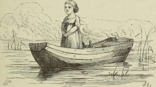
og de smaa Bølger bar dem straks i Land til hende, det var, ligesom om Floden ikke vilde tage det kæreste, hun havde, da den jo ikke havde den lille Kay; men hun troede nu, at hun ikke kastede Skoene langt nok ud, og saa krøb hun op i en Baad, der laa i Sivene, hun gik helt ud i den yderste Ende og kastede Skoene; men Baaden var ikke bunden fast, og ved den Bevægelse, hun gjorde, gled den fra Land; hun mærkede det og skyndte sig for at komme bort. men før hun naaede tilbage, var Baaden over en Alen ude, og nu gled den hurtigere af Sted.
Da blev den lille Gerda ganske forskrækket og gav sig til at græde, men ingen hørte hende uden Graaspurvene, og de kunde rkke bære hende i Land, men de fløj langs med Bredden
og sang, ligesom for at trøste hende: »Her ere vi! her ere vi!« Baaden drev med Strømmen; den lille Gerda sad ganske stille i de bare Strømper; hendes smaa, røde Sko flød bag efter, men de kunde ikke naa Baaden, der tog stærkere Fart.
Smukt var der paa begge Bredder, dejlige Blomster, gamle Træer og Skrænter med Faar og Køer, men ikke et Menneske at se.
»Maaske bærer Floden mig hen til lille Kay,« tænkte Gerda, og saa blev hun i bedre Humør, rejste sig op og saa i mange Timer paa de smukke grønne Bredder; saa kom hun til en stor Kirsebærhave, hvor der var et lille Hus med underlige røde og blaa Vinduer, for Resten Straatag og udenfor to Træsoldater, som skuldrede for dem, der sejlede forbi.
Gerda raabte paa dem; hun troede, at de vare levende, men de svarede naturligvis ikke; hun kom dem ganske nær, Floden drev Baaden lige ind imod Land.
Gerda raabte endnu højere, og saa kom ud af Huset en gammel, gammel Kone, der støttede sig paa en Krogkæp; hun havde en stor Solhat paa, og den var bemalet med de dejligste Blomster.
»Du lille stakkels Barn!« sagde den gamle Kone; »hvorledes er du dog kommet ud paa den store, stærke Strøm, drevet langt ud i den vide Verden?« og saa gik den gamle Kone helt ud i Vandet, slog sin Krogkæp fast i Baaden, trak den i Land og løftede den lille Gerda ud.
Og Gerda var glad ved at komme paa det tørre, men dog lidt bange for den fremmede, gamle Kone.
»Kom dog og fortæl mig, hvem du er, og hvorledes du kommer her!« sagde hun.
Og Gerda fortalte hende alting; og den gamle rystede med Hovedet og sagde: »hm! hm!« og da Gerda havde sagt hende alting og spurgt, om hun ikke havde set lille Kay, sagde Konen, at han var ikke kommen forbi, men han kom nok, hun skulde bare ikke være bedrøvet, men smage hendes Kirsebær, se hendes Blomster, de vare smukkere end nogen Billedbog, de kunde hver fortælle en hel Historie. Saa tog
hun Gerda ved Haanden, de gik ind i det lille Hus, og den gamle Kone lukkede Døren af.
Vinduerne sad saa højt oppe, og Glassene vare røde, blaa og gule; Dagslyset skinnede saa underligt derinde med alle Kulører, men paa Bordet stod de dejligste Kirsebær, og Gerda spiste saa mange, hun vilde, for det turde hun. Og medens hun spiste, kæmmede den gamle Kone hendes Haar med en Guldkam, og Haaret krøllede og skinnede saa dejligt gult om det lille, venlige Ansigt, der var saa rundt og saa ud som en Rose.
»Saadan en sød lille Pige har jeg rigtig længtes efter!« sagde den gamle. »Nu skal du se, hvor vi to godt skulle komme ud af det!« og alt som hun kæmmede den lille Gerdas Haar, glemte Gerda mer og mer sin Plejebroder Kay; for den gamle Kone kunde Trolddom, men en ond Trold var hun ikke, hun troldede bare lidt for sin egen Fornøjelse, og nu vilde hun gerne beholde den lille Gerda. Derfor gik hun ud i Haven, strakte sin Krogkæp ud mod alle Rosentræerne, og, i hvor dejligt de blomstrede, sank de dog alle ned i den sorte Jord, og man kunde ikke se, hvor de havde staaet. Den gamle var bange for, at naar Gerda saa Roserne, skulde hun tænke paa sine egne og da huske lille Kay og saa løbe sin Vej.
Nu førte hun Gerda ud i Blomsterhaven. — Nej! hvor her var en Duft og Dejlighed! alle de tænkelige Blomster, og det for enhver Aarstid, stod her i det prægtigste Flor; ingen Billedbog kunde være mere broget og smuk. Gerda sprang af Glæde og legede, til Solen gik ned bag de høje Kirsebærtræer; da fik hun en dejlig Seng med røde Silkedyner, de vare stoppede med blaa Violer, og hun sov og drømte der saa dejligt som nogen Dronning paa sin Bryllupsdag.
Næste Dag kunde hun lege igen med Blomsterne i det varme Solskin, — saaledes gik mange Dage. Gerda kendte hver Blomst, men i hvor mange der vare, syntes hun dog, at der manglede een, men hvilken vidste hun ikke. Da sidder hun en Dag og ser paa den gamle Kones Solhat med de malede Blomster, og netop den smukkeste der var en Rose. Den
gamle havde glemt at faa den af Hatten, da hun fik de andre ned i Jorden. Men saaledes er det ikke at have Tankerne med sig! — »Hvad!« sagde Gerda, »er her ingen Roser!« og sprang ind imellem Bedene, søgte og søgte, men der var ingen at finde; da satte hun sig ned og græd; men hendes hede Taarer faldt netop der, hvor et Rosentræ var sunket, og da de varme Taarer vædede Jorden, skød Træet med eet op, saa blomstrende, som da det sank, og Gerda omfavnede det, kyssede Roserne og tænkte paa de dejlige Roser hjemme og med dem paa den lille Kay.
»Oh, hvor jeg er bleven sinket!« sagde den lille Pige. »Jeg skulde jo finde Kay! — Veed I ikke, hvor han er?« spurgte hun Roserne. »Tror I, at han er død og borte?«
»Død er han ikke,« sagde Roserne. »Vi have jo været i Jorden, der ere alle de døde, men Kay var der ikke!«
»Tak skal I have!« sagde den lille Gerda, og hun gik hen til de andre Blomster og saa ind i deres Kalk og spurgte: »Veed I ikke, hvor lille Kay er?«
Men hver Blomst stod i Solen og drømte sit eget Eventyr eller Historie; af dem fik lille Gerda saa mange, mange, men ingen vidste noget om Kay.
Og hvad sagde da Ildlillien?
»Hører du Trommen: bum! bum! det er kun to Toner, altid bum! bum! hør Kvindernes Sørgesang! hør Præsternes Raab! — I sin lange, røde Kjortel staar Hindukonen paa Baalet, Flammerne slaa op om hende og hendes døde Mand; men Hindukonen tænker paa den levende her i Kredsen, ham, hvis Øjne brænde hedere end Flammerne, ham, hvis Øjnes Ild naa mere hendes Hjerte end de Flammer, som snart brænde hendes Legeme til Aske. Kan Hjertets Flamme dø i Baalets Flammer?«
»Det forstaar jeg slet ikke!« sagde den lille Gerda.
»Det er mit Eventyr!« sagde Ildlillien.
Hvad siger Konvolvolus?
»Ud over den snævre Fjeldvej hænger en gammel Ridderborg; det tætte Eviggrønt vokser op om de gamle, røde Mure, Blad ved Blad, hen om Altanen, og der staar en dejlig Pige;
hun bøjer sig ud over Rækværket og ser ned ad Vejen. Ingen Rose hænger friskere fra Grenene end hun; ingen Æbleblomst, naar Vinden bærer den fra Træet, er mere svævende end hun; hvor rasler den prægtige Silkekjortel! »>Kommer han dog ikke!««
»Er det Kay, du mener?« spurgte lille Gerda.
»Jeg taler kun om mit Eventyr, min Drøm,« svarede Konvolvolus.
Hvad siger den lille Sommergæk'?
»Mellem Træerne hænger i Snore det lange Bræt; det er en Gynge; to nydelige Smaapiger — Kjolerne ere hvide som Sne, lange, grønne Silkebaand flagre fra Hattene — sidde og gynge; Broderen, der er større end de, staar op i Gyngen, han har Armen om Snoren for at holde sig, thi i den ene Haand har han en lille Skaal, i den anden en Kridtpibe, han blæser Sæbebobler; Gyngen gaar, og Boblerne flyve med dejlige vekslende Farver; den sidste hænger endnu ved Pibestilken og bøjer sig i Vinden; Gyngen gaar. Den lille sorte Hund, let som Boblerne, rejser sig paa Bagbenene og vil med i Gyngen; den flyver, Hunden dumper, bjæffer og er vred; den gækkes, Boblerne briste, — et gyngende Bræt, et springende Skumbillede er min Sang!«
»Det kan gerne være, at det er smukt, hvad du fortæller, men du siger det saa sørgeligt og nævner slet ikke Kay. Hvad sige Hyacinterne?«
»Der var tre dejlige Søstre, saa gennemsigtige og fine; den enes Kjortel var rød, den andens var blaa, den tredies ganske hvid; Haand i Haand dansede de ved den stille Sø i det klare Maaneskin. De vare ikke Elverpiger, de vare Menneskebørn. Der duftede saa sødt, og Pigerne svandt i Skoven; Duften blev stærkere; — tre Ligkister, i dem laa de dejlige Piger, gled fra Skovens Tykning hen over Søen; Sankt-Hans-Orme fløj skinnende rundt om som smaa, svævende Lys. Sove de dansende Piger, eller ere de døde? — Blomsterduften siger, de ere Lig; Aftenklokken ringer over de døde!«
»Du gør mig ganske bedrøvet,« sagde den lille Gerda. »Du dufter saa stærkt; jeg maa tænke paa de døde Piger! ak,
er da virkelig lille Kay død? Roserne have været nede i Jorden, og de sige nej!«
»Ding, dang!« ringede Hyacintens Klokker. »Vi ringe ikke over lille Kay, ham kende vi ikke! vi synge kun vor Vise, den eneste, vi kunne!«
Og Gerda gik hen til Smørblomsten, der skinnede frem imellem de glinsende, grønne Blade.
»Du er en lille, klar Sol!« sagde Gerda. »Sig mig, om du veed, hvor jeg skal finde min Legebroder?«
Og Smørblomsten skinnede saa smukt og saa paa Gerda igen. Hvilken Vise kunde vel Smørblomsten synge? Den var heller ikke om Kay.
»I en lille Gaard skinnede Vor Herres Sol saa varmt den første Foraarsdag; Straalerne gled ned ad Naboens hvide Væg, tæt ved groede de første gule Blomster, skinnende Guld i de varme Solstraaler; gamle Bedstemoder var ude i sin Stol, Datterdatteren, den fattige, kønne Tjenestepige, kom hjem fra et kort Besøg; hun kyssede Bedstemoderen. Der var Guld, Hjertets Guld i det velsignede Kys. Guld paa Munden, Guld i Grunden, Guld deroppe i Morgenstunden! Se, det er min lille Historie!« sagde Smørblomsten.
»Min gamle, stakkels Bedstemoder!« sukkede Gerda. »Ja, hun længes vist efter mig, er bedrøvet for mig, ligesom hun var for lille Kay. Men jeg kommer snart hjem igen, og saa bringer jeg Kay med. — Det kan ikke hjælpe, at jeg spørger Blomsterne, de kunne kun deres egen Vise, de sige mig ikke Besked!« og saa bandt hun sin lille Kjole op, for at hun kunde løbe raskere; men Pinselillien slog hende over Benet, idet hun sprang over den; da blev hun staaende, saa paa den lange Blomst og spurgte: »Veed du maaske noget?« og hun bøjede sig lige ned til den. Og hvad sagde den?
»Jeg kan se mig selv! jeg kan se mig selv!« sagde Pinselillien. »Oh, oh, hvor jeg lugter! — Oppe paa det lille Kvistkammer, halvt klædt paa, staar en lille Danserinde, hun staar snart paa eet Ben, snart paa to, hun sparker ad den hele Verden, hun er bare Øjenforbindelse. Hun hælder Vand af Tepotten ud paa et Stykke Tøj, hun holder; det er Snørlivet; —
Renlighed er en god Ting! den hvide Kjole hænger paa Knagen, den er ogsaa vadsket i Tepotten og tørret paa Taget! den tager hun paa, det safrangule Tørklæde om Halsen, saa skinner Kjolen mere hvid. Benet i Vejret! se, hvor hun knejser paa een Stilk! jeg kan se mig selv! jeg kan se mig selv!«
»Det bryder jeg mig slet ikke om!« sagde Gerda, »det er ikke noget at fortælle mig!« og saa løb hun til Udkanten af Haven.
Døren var lukket, men hun vrikkede i den rustne Krampe, saa den gik løs, og Døren sprang op, og saa løb den lille Gerda paa bare Fødder ud i den vide Verden. Hun saa tre Gange tilbage, men der var ingen, som kom efter hende; til sidst kunde hun ikke løbe mere og satte sig paa en stor Sten, og da hun saa sig rundt om, var Sommeren forbi, det var sent paa Efteraaret, det kunde man slet ikke mærke derinde i den dejlige Have, hvor der var altid Solskin og alle Aars-tiders Blomster.
»Gud! hvor jeg har sinket mig!« sagde den lille Gerda. »Det er jo blevet Efteraar! saa tør jeg ikke hvile!« og hun rejste sig for at gaa.
Oh, hvor hendes smaa Fødder vare ømme og trætte, og rundt om saa det koldt og raat ud; de lange Pileblade vare ganske gule, og Taagen dryppede i Vand fra dem, eet Blad faldt efter et andet, kun Slaaentornen stod med Frugt, saa stram og til at rimpe Munden sammen. Oh, hvor det var graat og tungt i den vide Verden!
Fjerde Historie. Prins og Prinsesse.
Gerda maatte igen hvile sig; da hoppede der paa Sneen, lige over for hvor hun sad, en stor Krage; den havde længe siddet, set paa hende og vrikket med Hovedet; nu sagde den: »Kra! kra! — go' Da'! go' Da'!« Bedre kunde den ikke sige
det, men den mente det saa godt med den lille Pige og spurgte, hvorhen hun gik saa alene ude i den vide Verden. Det Ord: alene forstod Gerda meget godt og følte ret, hvor meget der laa deri, og saa fortalte hun Kragen sit hele Liv og Levned og spurgte, om den ikke havde set Kay.
Og Kragen nikkede ganske betænksomt og sagde: »Det kunde være! det kunde være!«
»Hvad? tror du!« raabte den lille Pige og havde nær klemt Kragen ihjel, saaledes kyssede hun den.
»Fornuftig! fornuftig!« sagde Kragen. »Jeg tror, det kan være den lille Kay! men nu har han vist glemt dig for Prinsessen!«
»Bor han hos en Prinsesse?« spurgte Gerda.
»Ja hør!« sagde Kragen, »men jeg har saa svært ved at tale dit Sprog. Forstaar du Kragemaal, saa skal jeg bedre fortælle!«
»Nej, det har jeg ikke lært!« sagde Gerda, »men Bedstemoder kunde det, og P-Maal kunde hun. Bare jeg havde lært det!«
»Gør ikke noget!« sagde Kragen, »jeg skal fortælle, saa godt jeg kan, men daarligt bliver det alligevel;« og saa fortalte den, hvad den vidste.
»I det Kongerige, hvor vi nu sidde, bor en Prinsesse, der er saa uhyre klog, men hun har ogsaa læst alle Aviser, der ere til i Verden, og glemt dem igen, saa klog er hun. Forleden sidder hun paa Tronen, og det er ikke saa morsomt endda, siger man, da kommer hun til at nynne en Vise, det var netop den. »»Hvorfor skulde jeg ikke gifte mig?«« »»Hør, det er der noget i,«« siger hun, og saa vilde hun gifte sig, men hun vilde have en Mand, der forstod at svare, naar man talte til ham, en, der ikke stod og kun saa fornem ud, for det er saa kedeligt. Nu lod hun alle Hofdamerne tromme sammen, og da de hørte, hvad hun vilde, ble ve de saa fornøjede. »»Det kan jeg godt lide!«« sagde de, »»saadant noget tænkte jeg ogsaa forleden!«« — Du kan tro, at det er sandt, hvert Ord jeg siger!« sagde Kragen. »Jeg har en tam Kæreste, der gaar frit om paa Slottet, og hun har fortalt mig alt!«
Det var naturligvis ogsaa en Krage, hans Kæreste, for Krage søger Mage, og det er altid en Krage.
»Aviserne kom straks ud med en Kant af Hjerter og Prinsessens Navnetræk; man kunde læse sig til, at det stod enhver ung Mand, der saa godt ud, frit for at komme op paa Slottet og tale med Prinsessen, og den, som talte, saa at man kunde høre, han var hjemme der, og talte bedst, ham vilde Prinsessen tage til Mand. — Ja, ja!« sagde Kragen, »du kan tro mig, det er saa vist, som jeg sidder her, Folk strømmede til, der var en Trængsel og en Løben, men det lykkedes ikke, hverken den første eller anden Dag. De kunde alle sammen godt tale, naar de vare ude paa Gaden, men naar de kom ind ad Slotsporten og saa Garden i Sølv og op ad Trapperne Lakajerne i Guld og de store, oplyste Sale, saa bleve de forbløffede; og stod de foran Tronen, hvor Prinsessen sad, saa vidste de intet at sige uden det sidste Ord, hun havde sagt, og det brød hun sig ikke om at høre igen. Det var, ligesom om Folk derinde havde faaet Snustobak paa Maven og vare faldne i Dvale, indtil de kom ud paa Gaden igen, ja, saa kunde de snakke. Der stod en Række lige fra Byens Port til Slottet. Jeg var selv inde at se det!« sagde Kragen. »De bleve baade sultne og tørstige, men fra Slottet fik de ikke engang saa meget som et Glas lunkent Vand. Vel havde nogle af de klogeste taget Smørrebrød med, men de delte ikke med deres Nabo; de tænkte som saa: »»Lad ham kun se sulten ud, saa tager Prinsessen ham ikke!««
»Men Kay, lille Kay!« spurgte Gerda. »Naar kom han? Var han mellem de mange?«
»Giv Tid! giv Tid! nu ere vi lige ved ham! Det var den tredie Dag, da kom der en lille Person, uden Hest eller Vogn, ganske frejdig marcherende lige op til Slottet; hans Øjne skinnede som dine, han havde dejlige lange Haar, men ellers fattige Klæder.«
»Det var Kay!« jublede Gerda. »Oh, saa har jeg fundet ham!« og hun klappede i Hænderne.
»Han havde en lille Ransel paa Ryggen!« sagde Kragen.
»Nej, det var vist hans Slæde!« sagde Gerda, »for med Slæden gik han bort!«
»Det kan gerne være!« sagde Kragen, »jeg saa ikke saa nøje til! men det veed jeg af min tamme Kæreste, at da han kom ind ad Slotsporten og saa Livgarden i Sølv og op ad Trappen Lakajerne i Guld, blev han ikke det bitterste forknyt, han nikkede og sagde til dem: »»Det maa være kedeligt at staa paa Trappen, jeg gaar heller indenfor!«« Der skinnede Salene med Lys; Gehejmeraader og Excellencer gik paa bare Fødder og bar Guldfade; man kunde nok blive højtidelig! hans Støvler knirkede saa frygtelig stærkt, men han blev dog ikke bange!«
»Det er ganske vist Kay!« sagde Gerda, »jeg veed, han havde ny Støvler, jeg har hørt dem knirke i Bedstemoders Stue!«
»Ja, knirke gjorde de!« sagde Kragen, »og frejdig gik han lige ind for Prinsessen, der sad paa en Perle saa stor som et Rokkehjul; og alle Hofdamerne med deres Piger og Pigers Piger, og alle Kavalererne med deres Tjenere og Tjeneres Tjenere, der holde Dreng, stod opstillede rundt om; og jo nærmere de stod ved Døren, jo stoltere saa de ud. Tjenernes Tjeners Dreng, der altid gaar i Tøfler, er næsten ikke til at se paa, saa stolt staar han i Døren!«
»Det maa være grueligt!« sagde den lille Gerda. »Og Kay har dog faaet Prinsessen?«
»Havde jeg ikke været en Krage, saa havde jeg taget hende, og det uagtet jeg er forlovet. Han skal have talt lige saa godt, som jeg taler, naar jeg taler Kragemaal, det har jeg fra min tamme Kæreste. Han var frejdig og nydelig; han var slet ikke kommen for at fri, bare alene kommen for at høre Prinsessens Klogskab, og den fandt han god, og hun fandt ham god igen.«
»Ja vist! det var Kay!« sagde Gerda, »han var saa klog, han kunde Hovedregning med Brøk! — Oh, vil du ikke føre mig ind paa Slottet!«
»Ja, det er let sagt!« sagde Kragen. »Men hvorledes gøre vi det? Jeg skal tale derom med min tamme Kæreste; hun
kan vel raade os; thi det maa jeg sige dig, saadan en lille Pige som du faar aldrig Lov at komme ordentlig ind!«
»Jo, det gør jeg!« sagde Gerda. »Naar Kay hører, jeg er her, kommer han straks ud og henter mig!«
»Vent mig ved Stænten der!« sagde Kragen, vrikkede med Hovedet og fløj bort.
Først da det var mørk Aften, kom Kragen igen tilbage: »Rar! rar!« sagde den. »Jeg skal hilse dig fra hende mange Gange! og her er et lille Brød til dig, det tog hun i Køkkenet, der er Brød nok, og du er vist sulten! — Det er ikke muligt, at du kan komme ind paa Slottet, du har jo bare Fødder; Garden i Sølv og Lakajerne i Guld ville ikke tillade det; men græd ikke, du skal nok komme derop. Min Kæreste veed en lille Bagtrappe, som fører til Sovekamret, og hun veed, hvor hun skal tage Nøglen!«
Og de gik ind i Haven, i den store Allé, hvor det ene Blad faldt efter det andet, og da paa Slottet Lysene slukkedes, det ene efter det andet, førte Kragen lille Gerda hen til en Bagdør, der stod paa Klem.
Oh, hvor Gerdas Hjerte bankede af Angest og Længsel! det var, ligesom om hun skulde gøre noget ondt, og hun vilde jo kun have at vide, om det var lille Kay; jo, det maatte være ham; hun tænkte saa levende paa hans kloge Øjne, hans lange Haar; hun kunde ordentlig se, hvorledes han smilede, som da de sad hjemme under Roserne. Han vilde vist blive glad ved at se hende, høre, hvilken lang Vej hun havde gaaet for hans Skyld, og vide, hvor bedrøvet de alle hjemme havde været, da han ikke kom igen. Oh, det var en Frygt og en Glæde.
Nu vare de paa Trappen; der brændte en lille Lampe paa et Skab; midt paa Gulvet stod den tamme Krage og drejede Hovedet til alle Sider og betragtede Gerda, der nejede, som Bedstemoder havde lært hende.
»Min forlovede har talt saa smukt om Dem, min lille Frøken,« sagde den tamme Krage. »Deres Vita, som man kalder det, er ogsaa meget rørende! — Vil De tage Lampen, saa skal jeg gaa foran. Vi gaa her den lige Vej, for der træffe vi ingen!«
»Jeg synes, her kommer nogen lige bag efter!« sagde Gerda, og det susede forbi hende; det var ligesom Skygger hen ad Væggen, Heste med flagrende Manker og tynde Ben, Jægerdrenge, Herrer og Damer til Hest.
»Det er kun Drømmene!« sagde Kragen, »de komme og hente det høje Herskabs Tanker til Jagt, godt er det, saa kan De bedre betragte dem i Sengen. Men lad mig se, kommer De til Ære og Værdighed, at De da viser et taknemmeligt Hjerte!«
»Det er jo ikke noget at snakke om!« sagde Kragen fra Skoven.
Nu kom de ind i den første Sal, den var af rosenrødt Atlask med kunstige Blomster op ad Væggen; her susede dem allerede Drømmene forbi, men de foer saa hurtigt, at Gerda ikke fik set det høje Herskab. Den ene Sal blev prægtigere end den anden: jo man kunde nok blive forbløffet, og nu vare de i Sovekamret. Loftet herinde lignede en stor Palme med Blade af Glas, kostbart Glas, og midt paa Gulvet hang i en tyk Stilk af Guld to Senge, der hver saa ud som Lillier: den ene var hvid, i den laa Prinsessen; den anden var rød, og i den var det, at Gerda skulde søge lille Kay; hun bøjede et af de røde Blade til Side, og da saa hun en brun Nakke. — Oh, det var Kay! — Hun raabte ganske højt hans Navn, holdt Lampen hen til ham — Drømmene susede til Hest ind
i Stuen igen — han vaagnede, drejede Hovedet, og det
var ikke den lille Kay.
Prinsen lignede ham kun paa Nakken, men ung og smuk var han. Og fra den hvide Lillieseng tittede Prinsessen ud og spurgte hvad det var. Da græd den lille Gerda og fortalte hele sin Historie og alt hvad Kragerne havde gjort for hende.
»Du lille Stakkel!« sagde Prinsen og Prinsessen, og de roste Kragerne og sagde, at de vare slet ikke vrede paa dem, men de skulde dog ikke gøre det oftere. Imidlertid skulde de have en Belønning.
»Ville I flyve frit?« spurgte Prinsessen, »eller ville I have fast Ansættelse som Hofkrager med alt, hvad der falder af i Køkkenet?«
SNEDRONNINGEN.
285
Og begge Kragerne nejede og bad om fast Ansættelse; for de tænkte paa deres Alderdom og sagde: »Det var saa godt at have noget fo'r den gamle Mand,« som de kaldte det.
Og Prinsen stod op af sin Seng og lod Gerda sove i den, og mere kunde han ikke gøre. Hun foldede sine smaa Hænder og tænkte: »Hvor dog Mennesker og Dyr ere gode,« og saa lukkede hun sine Øjne og sov saa velsignet. Alle Drømmene kom igen flyvende ind, og da saa de ud som Guds Engle, og de trak en lille Slæde, og paa den sad Kay og nikkede; men det hele var kun Drømmeri, og derfor var det ogsaa borte igen, saa snart hun vaagnede.
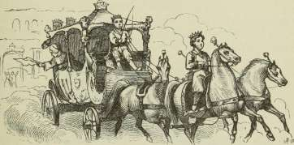
Næste Dag blev hun klædt op fra Top til Taa i Silke og Fløjl; hun fik Tilbud at blive paa Slottet og have gode Dage, men hun bad alene om at faa en lille Vogn med en Hest for og et Par smaa Støvler, saa vilde hun igen køre ud i den vide Verden og finde Kay.
Og hun fik baade Støvler og Muffe; hun blev saa nydeligt klædt paa, og da hun vilde af Sted, holdt ved Døren én ny Karet af purt Guld; Prinsens og Prinsessens Vaaben lyste fra den som en Stjerne; Kusk, Tjenere og Forridere, for der var ogsaa Forridere, sad klædte i Guldkroner. Prinsen og Prinsessen hjalp hende selv i Vognen og ønskede hende al Lykke. Skovkragen, der nu var bleven gift, fulgte med de første tre Mil; den sad ved Siden af hende, for den kunde ikke taale
SNEDRONNINGEN.
at køre baglængs; den anden Krage stod i Porten og slog med Vingerne, den fulgte ikke med, thi den led af Hovedpine, siden den havde faaet fast Ansættelse og for meget at spise. Indeni var Kareten foret med Sukkerkringler, og i Sædet vare Frugter og Pebernødder.
»Far vel! far vel!« raabte Prins og Prinsesse, og lille Gerda græd, og Kragen græd; — saaledes gik de første Mil; da sagde ogsaa Kragen Farvel, og det var den tungeste Afsked! den fløj op i et Træ og slog med sine sorte Vinger, saa længe den kunde se Vognen, der straalede som det klare Solskin.
wC
y\ i
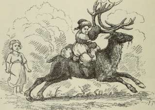
Femte Historie. Den lille Røver pige.
De kørte gennem den mørke Skov, men Kareten skinnede som et Blus, det skar Røverne i Øjnene, det kunde de ikke taale.
»Det er Guld! det er Guld!« raabte de, styrtede frem, tog fat i Hestene, slog de smaa Jockeyer, Kusken og Tjenerne ihjel og trak nu den lille Gerda ud af Vognen.
»Hun er fed, hun er nydelig, hun er fedet med Nødde-kærne!« sagde den gamle Røverkælling, der havde et langt,
stridt Skæg og Øjenbryn, der hang hende ned over Øjnene. »Det er saa godt som et lille Fedelam! naa, hvor hun skal smage!« og saa trak hun sin blanke Kniv ud, og den skinnede, saa at det var grueligt.
»Av!« sagde Kællingen lige i det samme; hun blev bidt i Øret af sin egen lille Datter, der hang paa hendes Ryg og var saa vild og uvorn, saa det var en Lyst. »Du lede Unge!« sagde Moderen og fik ikke Tid til at slagte Gerda.
»Hun skal lege med mig!« sagde den lille Røverpige. »Hun skal give mig sin Muffe, sin smukke Kjole, sove hos mig i min Seng!« og saa bed hun igen, saa Røverkællingen sprang i Vejret og drejede sig rundt, og alle Røverne lo og sagde: »Se, hvor hun danser med sin Unge!«
»Jeg vil ind i Kareten!« sagde den lille Røverpige, og hun maatte og vilde have sin Villie, for hun var saa forkælet og saa stiv. Hun og Gerda sad ind i den, og saa kørte de over Stub og Tjørn dybere ind i Skoven. Den lille Røverpige var saa stor som Gerda, men stærkere, mere bredskuldret og mørk i Huden; Øjnene vare ganske sorte, de saa næsten bedrøvede ud. Hun tog den lille Gerda om Livet og sagde: »De skal ikke slagte dig, saa længe jeg ikke bliver vred paa dig! Du er sagtens en Prinsesse?«
»Nej,« sagde lille Gerda og fortalte hende alt, hvad hun havde oplevet, og hvor meget hun holdt af lille Kay.
Røver pigen saa ganske alvorlig paa hende, nikkede lidt med Hovedet og sagde: »De skal ikke slagte dig, selv om jeg endogsaa bliver vred paa dig, saa skal jeg nok selv gøre det!« og saa tørrede hun Gerdas Øjne og puttede begge sine Hænder ind i den smukke Muffe, der var saa blød og saa varm.
Nu holdt Kareten stille; de vare midt inde i Gaarden af et Røverslot; det var revnet fra øverst til nederst, Ravne og Krager fløj ud af de aabne Huller, og de store Bulbidere, der hver saa ud til at kunne sluge et Menneske, sprang højt i Vejret, men de gøede ikke, for det var forbudt.
I den store, gamle, sodede Sal brændte midt paa Stengulvet en stor Ild; Røgen trak hen under Loftet og maatte
selv se at finde ud; en stor Bryggerkedel kogte med Suppe, og baade Harer og Kaniner vendtes paa Spid.
»Du skal sove i Nat med mig her hos alle mine Smaa-dyr!« sagde Røverpigen. De fik at spise og drikke og gik saa hen i et Hjørne, hvor der laa Halm og Tæpper. Ovenover sad paa Lægter og Pinde næsten hundrede Duer, der alle syntes at sove, men drejede sig dog lidt, da Smaa-pigerne kom.
»Det er alle sammen mine,« sagde den lille Røver pige og greb rask fat i en af de nærmeste, holdt den ved Benene og rystede den, saa at den slog med Vingerne. »Kys den!« raabte hun og baskede Gerda med den i Ansigtet. »Der sidde Skovkanaljerne!« blev hun ved og viste bag en Mængde Tremmer, der var slaaet for et Hul i Muren højt oppe. »Det er Skovkanaljer, de to! de flyve straks bort, har man dem ikke rigtig laaset; og her staar min gamle Kæreste Bæ!« og hun trak ved Hornet et Rensdyr, der havde en blank Kobberring om Halsen og var bundet. »Ham maa vi ogsaa have i Klemme, ellers springer han med fra os. Hver evige Aften kildrer jeg ham paa Halsen med min skarpe Kniv, det er han saa bange for!« og den lille Pige trak en lang Kniv ud af en Sprække i Muren og lod den glide over Rensdyrets Hals; det stakkels Dyr slog ud med Benene, og Røverpigen lo og trak saa Gerda med ned i Sengen.
»Vil du have Kniven med, naar du skal sove?« spurgte Gerda og saa lidt bange til den.
»Jeg sover altid med Kniv!« sagde den lille Røverpige. »Man veed aldrig, hvad der kan komme. Men fortæl mig nu igen, hvad du fortalte før om lille Kay, og hvorfor du er gaaet ud i den vide Verden.« Og Gerda fortalte forfra, og Skovduerne kurrede deroppe i Buret, de andre Duer sov. Den lille Røverpige lagde sin Arm om Gerdas Hals, holdt Kniven i den anden Haand og sov, saa man kunde høre det; men Gerda kunde slet ikke lukke sine Øjne, hun vidste ikke, om hun skulde leve eller dø. Røverne sad rundt om Ilden, sang og drak, og Røverkællingen slog Kolbøtter. Oh! det var ganske grueligt for den lille Pige at se paa.
Da sagde Skovduerne: »Kurre, kurre! vi have set den lille Kay. En hvid Høne bar hans Slæde, han sad i Snedronningens Vogn, der foer lavt hen over Skoven, da vi laa i Rede; hun blæste paa os Unger, og alle døde de uden vi to; kurre! kurre!«
»Hvad sige I deroppe?« raabte Gerda, »hvor rejste Snedronningen hen? Veed I noget derom?«
»Hun rejste sagtens til Lapland, for der er altid Sne og Is! spørg bare Rensdyret, som staar bundet i Strikken.«
»Der er Is og Sne, der er velsignet og godt!« sagde Rensdyret; »der springer man frit om i de store, skinnende Dale! der har Snedronningen sit Sommertelt, men hendes faste Slot er oppe mod Nordpolen, paa den 0, som kaldes Spits-b e r g e n!«
»O Kay, lille Kay!« sukkede Gerda.
»Nu skal du ligge stille!« sagde Røverpigen, »ellers faar du Kniven op i Maven!«
Om Morgenen fortalte Gerda hende alt, hvad Skovduerne havde sagt, og den lille Røver pige saa ganske alvorlig ud, men nikkede med Hovedet og sagde: »Det er det samme! det er det samme. — Veed du, hvor Lapland er?« spurgte hun Rensdyret.
»Hvo skulde bedre vide det end jeg,« sagde Dyret, og Øjnene spillede i Hovedet paa det. »Der er jeg født og baaret, der har jeg sprunget paa Snemarken.«
»Hør!« sagde Rø ver pi gen til Gerda,, »du ser, at alle vore Mandfolk ere borte, men Mutter er her endnu, og hun bliver, men op ad Morgenstunden drikker hun af den store Flaske og tager sig saa en lille Lur ovenpaa; — saa skal jeg gøre noget for dig!« Nu sprang hun ud af Sengen, foer hen om Halsen paa Moderen, trak hende i Mundskægget og sagde: »Min egen søde Gedebuk, god Morgen!« Og Moderen knipsede hende under Næsen, saa den blev baade rød og blaa, men det var alt sammen af bare Kærlighed.
Da saa Moderen havde drukket af sin Flaske og lik sig en lille Lur, gik Røverpigen hen til Rensdyret og sagde »Jeg kunde have besynderlig Lyst til endnu at kildre dig
H. C. Andersen : Eventyr og Historier. 19
mange Gange med den skarpe Kniv, for saa er du saa morsom, men det er det samme, jeg vil løsne din Snor og hjælpe dig udenfor, at du kan løbe til Lapland, men du skal tage Benene med dig og bringe mig denne lille Pige til Snedronningens Slot, hvor hendes Legebroder er. Du har nok hørt, hvad hun fortalte, thi hun snakkede højt nok, og du lurer!«
Rensdyret sprang højt af Glæde. Røverpigen løftede lille Gerda op og havde den Forsigtighed at binde hende fast, ja, endogsaa at give hende en lille Pude at sidde paa. »Det er det samme,« sagde hun, »der har du dine laadne Støvler, for det bliver koldt, men Muffen beholder jeg, den er alt for nydelig! Alligevel skal du ikke fryse. Her har du min Moders store Bælvanter, de naa dig lige op til Albuen; stik i! — Nu ser du ud paa Hænderne ligesom min ækle Moder!«
Og Gerda græd af Glæde.
»Jeg kan ikke lide, at du tviner!« sagde den lille Røverpige. »Nu skal du just se fornøjet ud! og der har du to Brød og en Skinke, saa kan du ikke sulte.« Begge Dele bleve bundne bag paa Rensdyret; den lille Røverpige aabnede Døren, lokkede alle de store Hunde ind, og saa skar hun Strikken over med sin Kniv og sagde til Rensdyret: »Løb saa! men pas vel paa den lille Pige!«
Og Gerda strakte Hænderne med de store Bælvanter ud mod Røverpigen og sagde Farvel, og saa fløj Rensdyret af Sted over Buske og Stubbe, gennem den store Skov, over Moser og Stepper, alt hvad det kunde. Ulvene hylede, og Ravnene skreg. »Fut! fut!« sagde det paa Himlen. Det var, ligesom om den nyste rødt.
»Det er mine gamle Nordlys!« sagde Rensdyret, »se, hvor de lyse!« og saa løb det endnu mere af Sted, Nat og Dag; Brødene bleve spiste, Skinken med, og saa vare de i Lapland.
SNEDRONNINGEN.
291
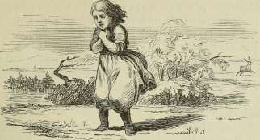
Sjette Historie. Lappekonen og Finnekonen.
De holdt stille ved et lille Hus; det var saa ynkeligt; Taget gik ned til Jorden, og Døren var saa lav, at Familien maatte krybe paa Maven, naar den vilde ud eller ind. Her var ingen hjemme uden en gammel Lappekone, der stod og stegte Fisk ved en Tranlampe; og Rensdyret fortalte hele Gerdas Historie, men først sin egen, for det syntes, at den var meget vigtigere, og Gerda var saa forkommen af Kulde, at hun ikke kunde tale.
»Ak, I arme Stakler!« sagde Lappekonen, »da have 1 langt endnu at løbe! I maa af Sted over hundrede Mil ind i Finmarken, for der ligger Snedronningen paa Landet og brænder Blaalys hver evige Aften. Jeg skal skrive et Par Ord paa en tør Klipfisk, Papir har jeg ikke, den skal jeg give eder med til Finnekonen deroppe, hun kan give eder bedre Besked end jeg!«
Og da nu Gerda var bleven varmet og havde faaet at spise og drikke, skrev Lappekonen et Par Ord paa en tør Klipfisk, bad Gerda passe vel paa den, bandt hende igen fast paa Rensdyret, og det sprang af Sted. »Fut! fut!« sagde det oppe i Luften, hele Natten brændte de dejligste blaa Nordlys; — og saa kom de til Finmarken og bankede paa Finnekonens Skorsten, for hun havde ikke engang Dør.
Der var en Hede derinde, saa Finnekonen selv gik næsten
ganske nøgen; lille var hun og ganske grumset; hun løsnede straks Klæderne paa lille Gerda, tog Bælvanterne og Støvlerne af, for ellers havde hun faaet det for hedt, lagde Rensdyret et Stykke Is paa Hovedet og læste saa, hvad der stod skrevet paa Klipfisken; hun læste det tre Gange, og saa kunde hun det udenad og puttede Fisken i Madgryden, for den kunde jo godt spises, og hun spildte aldrig noget.
Nu fortalte Rensdyret først sin Historie, saa den lille Gerdas, og Finnekonen plirede med de kloge Øjne, men sagde ikke noget.
»Du er saa klog,« sagde Rensdyret; »jeg veed, du kan binde alle Verdens Vinde i en Sytraad; naar Skipperen løser den ene Knude, faar han god Vind, løser han den anden, da blæser det skarpt, og løser han den tredie og fjerde, da stormer det, saa Skovene falde om. Vil du ikke give den lille Pige en Drik, saa hun kan faa tolv Mands Styrke og overvinde Snedronningen.«
»Tolv Mands Styrke,« sagde Finnekonen; »jo, det vil godt forslaa!« og saa gik hun hen til en Hylde, tog et stort, sammenrullet Skind frem, og det rullede hun op; der var skrevet underlige Bogstaver derpaa, og Finnekonen læste, saa Vandet haglede ned ad hendes Pande.
Men Rensdyret bad igen saa meget for den lille Gerda, og Gerda saa med saa bedende Øjne, fulde af Taarer, paa Finnekonen, at denne begyndte igen at plire med sine og trak Rensdyret hen i en Krog, hvor hun hviskede til det, medens det fik frisk Is paa Hovedet:
»Den lille Kay er rigtignok hos Snedronningen og finder der alt efter sin Lyst og Tanke og tror, det er den bedste Del af Verden, men det kommer af, at han har faaet en Glassplint i Hjertet og et lille Glaskorn i Øjet; de maa først ud, ellers bliver han aldrig til Menneske, og Snedronningen vil beholde Magten over ham!«
»Men kan du ikke give den lille Gerda noget ind, saa hun kan faa Magt over det hele?«
»Jeg kan ikke give hende større Magt, end hun allerede har! ser du ikke, hvor stor den er? Ser du ikke, hvor Men-
nesker og Dyr maa tjene hende, hvorledes hun paa bare Ben er kommen saa vel frem i Verden. Hun maa ikke af os vide sin Magt, den sidder i hendes Hjerte, den sidder i, hun er et sødt, uskyldigt Barn. Kan hun ikke selv komme ind til Snedronningen og faa Glasset ud af den lille Kay, saa kunne vi ikke hjælpe! To Mil herfra begynder Snedronningens Have, derhen kan du bære den lille Pige; sæt hende af ved den store Busk, der staar med røde Bær i Sneen, hold ikke lang Faddersladder og skynd dig her tilbage!« Og saa løftede Finnekonen den lille Gerda op paa Rensdyret, der løb alt, hvad det kunde.
»Oh, jeg fik ikke mine Støvler! jeg fik ikke mine Bæl-vanter!« raabte den lille Gerda; det mærkede hun i den sviende Kulde; men Rensdyret turde ikke standse, det løb, til det kom til den store Busk med de røde Bær; der satte det Gerda af, kyssede hende paa Munden, og der løb store, blanke Taarer ned over Dyrets Kinder, og saa løb det, alt hvad det kunde, igen tilbage. Der stod den stakkels Gerda, uden Sko, uden Handsker, midt i det frygtelige iskolde Finmarken.
Hun løb fremad, saa stærkt hun kunde; da kom der et helt Regiment Snefnug; men de faldt ikke ned fra Himlen, den var ganske klar og skinnede af Nordlys; Snefnuggene løb lige hen ad Jorden, og jo nærmere de kom, des større bleve de; Gerda huskede nok, hvor store og kunstige de havde set ud, den Gang hun saa Snefnuggene gennem Brændglasset, men her vare de rigtignok anderledes store og frygtelige, de vare levende, de vare Snedronningens Forposter; de havde de underligste Skikkelser; nogle saa ud som fæle, store Pindsvin, andre som hele Knuder af Slanger, der stak Hovederne frem, og andre som smaa, tykke Bjørne, paa hvem Haarene struttede, alle skinnende hvide, alle vare de levende Snefnug.
Da bad den lille Gerda sit Fadervor, og Kulden var saa stærk, at hun kunde se sin egen Aande; som en hel Røg stod den hende ud af Munden; Aanden blev tættere og tættere, og den formede sig til smaa, klare Engle, der vokste mer og mere, naar de rørte ved Jorden; og alle havde de Hjælm paa
SNEDRONNINGEN.
Hovedet og Spyd og Skjold i Hænderne; de bleve flere og flere, og da Gerda havde endt sit Fadervor, var der en hel Legion om hende; de huggede med deres Spyd paa de gruelige Snefnug, saa de sprang i hundrede Stykker, og den lille Gerda gik ganske sikker og frejdig frem. Englene klappede hende paa Fødderne og paa Hænderne, og saa følte hun mindre, hvor koldt det var, og gik rask frem mod Snedronningens Slot.
Men nu skulle vi først se, hvorledes Kay har det. Han tænkte rigtignok ikke paa lille Gerda, og allermindst at hun stod uden for Slottet.
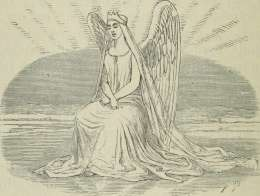
Syvende Historie. Hvad der skete i Snedronningens Slot, og hvad der
siden skete.
Slottets Vægge vare af den fygende Sne, og Vinduer og Døre af de skærende Vinde; der var over hundrede Sale, alt ligesom Sneen fygede; den største strakte sig mange Mil, alle belyste af de stærke Nordlys, og de vare saa store, saa tomme, saa isnende kolde og saa skinnende. Aldrig kom her Lystighed, ikke engang saa meget som et lille Bjørnebal, hvor Stormen
kunde blæse op, og Isbjørnene gaa paa Bagbenene og have fine Manerer; aldrig et lille Spilleselskab med Munddask og slaa paa Labben; aldrig en lille Smule Kaffekommers af de hvide Rævefrøkener; tomt, stort og koldt var det i Snedronningens Sale. Nordlysene blussede saa nøjagtig, at man kunde tælle til, naar de vare paa det højeste, og naar de vare paa det laveste. Midt derinde i den tomme, uendelige Snesal var der en frossen Sø; den var revnet i tusinde Stykker, men hvert Stykke var saa akkurat ligt det andet, at det var et helt Kunststykke; og midt paa den sad Snedronningen, naar hun var hjemme, og saa sagde hun, at hun sad i Forstandens Spejl, og at det var det eneste og bedste i denne Verden.
Lille Kay var ganske blaa af Kulde, ja næsten sort, men han mærkede det dog ikke, for hun havde jo kysset Kuldegyset af ham, og hans Hjerte var saa godt som en Isklump. Han gik og slæbte paa nogle skarpe, flade Isstykker, som han lagde paa alle mulige Maader, for han vilde have noget ud deraf, det var, ligesom naar vi andre have smaa Træplader og lægge disse i Figurer, der kaldes det kinesiske Spil. Kay gik ogsaa og lagde Figurer, de allerkunstigste, det var Forstands-I s-spillet; for hans Øjne vare Figurerne ganske udmærkede og af den allerhøjeste Vigtighed; det gjorde det Glaskorn, der sad ham i Øjet! han lagde hele Figurer, der vare et skrevet Ord, men aldrig kunde han finde paa at lægge det Ord, som han just vilde, det Ord: Evigheden, og Snedronningen havde sagt: »Kan du udfinde mig den Figur, saa skal du være din egen Herre, og jeg forærer dig hele Verden og et Par ny Skøjter.« Men han kunde ikke.
»Nu suser jeg bort til de varme Lande!« sagde Snedronningen, »jeg vil hen og kigge ned i de sorte Gryder!« — Det var de ildsprudende Bjerge, Ætna og Vesuv, som man kalder dem. — »Jeg skal hvidte dem lidt! det hører til; det gør godt oven paa Citroner og Vindruer!« og saa fløj Snedronningen, og Kay sad ganske ene i den mange Mil store, tomme Issal og saa paa Isstykkerne og tænkte og tænkte, saa det knagede i ham; ganske stiv og stille sad han, man skulde tro, han var frossen ihjel.
Da var det, at den lille Gerda traadte ind i Slottet, gennem den store Port, der var skærende Vinde; men hun læste en Aftenbøn, og da lagde Vindene sig, som de vilde sove, og hun traadte ind i de store, tomme, kolde Sale — da saa hun Kay, hun kendte ham, hun fløj ham om Halsen, holdt ham saa fast og raabte: »Kay! søde, lille Kay! saa har jeg da fundet dig!«
Men han sad ganske stille, stiv og kold; — da græd den lille Gerda hede Taarer, de faldt paa hans Bryst, de trængte ind i hans Hjerte, de optøede Isklumpen og fortærede den lille Spejlstump derinde; han saa paa hende, og hun sang Psalmen:
»Roserne vokse i Dale,
der -faa vi Barn Jesus i Tale!«
Da brast Kay i Graad; han græd, saa Spejlkornet trillede ud af Øjnene, han kendte hende og jublede: »Gerda! søde, lille Gerda! — hvor har du dog været saa længe? Og hvor har jeg været?« Og han saa rundt om sig. »Hvor her er koldt! hvor her er tomt og stort!« og han holdt sig fast til Gerda, og hun lo og græd af Glæde; det var saa velsignet, at selv Isstykkerne dansede af Glæde rundt om, og da de vare trætte og lagde sig, laa de netop i de Bogstaver, som Snedronningen havde sagt, at han skulde udfinde, saa var han sin egen Herre, og hun vilde give ham hele Verden og et Par ny Skøjter.
Og Gerda kyssede hans Kinder, og de bleve blomstrende; hun kyssede hans Øjne, og de lyste som hendes; hun kyssede hans Hænder og Fødder, og han var sund og rask. Snedronningen maatte gerne komme hjem, hans Fribrev stod skrevet der med skinnende Isstykker.
Og de tog hinanden i Hænderne og vandrede ud af det store Slot; de talte om Bedstemoder og om Roserne oppe paa Taget; og hvor de gik, laa Vindene ganske stille, og Solen brød frem; og da de naaede Busken med de røde Bær, stod Rensdyret der og ventede; det havde en anden ung Ren med, hvis Yver var fuldt, og den gav de smaa sin varme Mælk og kyssede dem paa Munden. Saa bar de Kay og Gerda først
til Finnekonen, hvor de varmede sig op i den hede Stue og fik Besked om Hjemrejsen, saa til Lappekonen, der havde syet dem ny Klæder og gjort sin Slæde i Stand.
Og Rensdyret og den unge Ren sprang ved Siden og fulgte med lige til Landets Grænse; der tittede det første grønne frem,, der tog de Afsked med Rensdyret og med Lappekonen. »Far vel!« sagde de alle sammen. Og de første smaa Fugle begyndte at kvidre, Skoven havde grønne Knopper, og ud fra den kom ridende paa en prægtig Hest, som Gerda kendte (den havde været spændt for Guldkareten), en ung Pige med en skinnende rød Hue paa Hovedet og Pistoler foran sig; det var den lille Rø ver pige, som var ked af at være hjemme og vilde nu først Nord paa og siden ad en anden Kant, dersom hun ikke blev fornøjet. Hun kendte straks Gerda, og Gerda kendte hende, det var en Glæde.
»Du er en rar Fyr til at traske om!« sagde hun til lille Kay; »jeg gad vide, om du fortjener, man løber til Verdens Ende for din Skyld!«
Men Gerda klappede hende paa Kinden og spurgte om Prins og Prinsesse.
»De ere rejste til fremmede Lande!« sagde Rø ver pig en.
»Men Kragen?« spurgte den lille Gerda.
»Ja, Kragen er død!« svarede hun. »Den tamme Kæreste er bleven Enke og gaar med en Stump sort Uldgarn om Benet; hun klager sig ynkeligt, og Vrøvl er det hele! — Men fortæl mig nu, hvorledes det er gaaet dig, og hvorledes du fik fat paa ham!«
Og Gerda og Kay fortalte begge to.
»Og Snip-snap-snurre-basselurre!« sagde Røver pigen, tog dem begge to i Hænderne og lovede, at hvis hun engang kom igennem deres By, saa vilde hun komme op og besøge dem, og saa red hun ud i den vide Verden, men Kay og Gerda gik Haand i Haand, og som de gik, var det et dejligt Foraar med Blomster og Grønt; Kirkeklokkerne ringede, og de kendte de høje Taarne, den store By, det var i den, de boede, og de gik ind i den og hen til Bedstemoders Dør, op ad Trappen, ind i Stuen, hvor alt stod paa samme Sted som før,
SNEDRONNINGEN.
og Uret sagde: dik! dik! og Viseren drejede; men idet de gik igennem Døren, mærkede de, at de vare blevne voksne Mennesker. Roserne fra Tagrenden blomstrede ind ad de aabne Vinduer, og der stod de smaa Børnestole, og Kay og Gerda satte sig hver paa sin og holdt hinanden i Hænderne; de havde glemt som en tung Drøm den kolde, tomme Herlighed hos Snedronningen. Bedstemoder sad i Guds klare Solskin og læste højt af Bibelen: »Uden at I blive som Børn, komme I ikke i Guds Rige!«
Og Kay og Gerda saa hinanden ind i Øjet, og de forstod paa een Gang den gamle Psalme:
»Roserne vokse i Dale,
der faa vi Barn Jesus i Tale!«
Der sad de begge to, voksne og dog Børn, Børn i Hjertet, og det var Sommer, den varme, velsignede Sommer.
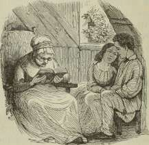
(fik "•u/t
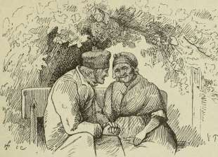
tfi<få?/ ri.
Hyldemor.
Der var engang en lille Dreng, der var forkølet; han havde gaaet og faaet vaade Fødder, ingen kunde begribe, hvor han havde faaet dem fra, thi det var ganske tørt Vejr. Nu klædte hans Moder ham af, bragte ham i Seng og lod Temaskinen komme ind for at lave ham en god Kop Hyldete, for det varmer! I det samme kom ind ad Døren den gamle morsomme Mand, som boede øverst oppe i Huset og levede saa alene, for han havde hverken Kone eller Børn, men holdt saa meget af alle Børn og vidste at fortælle saa mange Eventyr og Historier, saa det var en Lyst.
»Nu drikker du din Te!« sagde Moderen, »maaske faar du saa et Eventyr.«
»Ja, naar man bare kunde noget nyt!« sagde den gamle Mand og nikkede saa mildt. »Men hvor har den lille faaet de vaade Fødder?« spurgte han.
»Ja, hvor har han det!« sagde Moderen, »det kan der ingen begribe.«
»Faar jeg et Eventyr?« spurgte Drengen.
»Ja, kan du sige mig temmelig nøjagtigt, for det maa jeg først vide, hvor dyb er Rendestenen omme i den lille Gade, hvor du gaar i Skole?«
»Akkurat til midt paa Skafterne,« sagde Drengen, »men saa maa jeg gaa i det dybe Hul!«
»Se, derfra har vi de vaade Fødder,« sagde den gamle. »Nu skulde jeg rigtignok fortælle et Eventyr, men jeg kan ingen flere!«
»De kan lave eet lige straks,« sagde den lille Dreng. »Moder siger, at alt hvad De ser paa, kan blive et Eventyr, og alt hvad De rører ved, kan De faa en Historie af!«
»Ja, men de Eventyr og Historier due ikke; nej, de rigtige, de komme af sig selv, de banke mig paa Panden og sige: her er jeg!«
»Banker det ikke snart?« spurgte den lille Dreng, og Moderen lo, kom Hyldete paa Potten og skænkede kogende Vand over.
»Fortæl! fortæl!«
»Ja, naar der vilde komme et Eventyr af sig selv, men saadant et er fornemt, det kommer kun, naar det selv har Lyst —! stop!« sagde han lige med eet. »Der har vi det! pas paa, nu er der et paa Tepotten!«
Og den lille Dreng saa hen til Tepotten, Laaget hævede sig mer og mer, og Hyldeblomsterne kom frem saa friske og hvide, de skød store, lange Grene, selv ud af Tuden bredte de sig til alle Sider og bleve større og større, det var den dejligste Hyldebusk, et helt Træ, det ragede ind i Sengen og skød Gardinerne til Side; nej, hvor det blomstrede og duftede! og midt i Træet sad en gammel, venlig Kone med en underlig Kjole paa, den var ganske grøn, ligesom Hyldetræets Blade, og besat med store, hvide Hyldeblomster, man kunde ikke straks se, om det var Tøj eller levende Grønt og Blomster.
»Hvad hedder den Kone?« spurgte den lille Dreng.
»Ja, disse Romere og Grækere,« sagde den gamle Mand, »de kaldte hende en Dryade, men det forstaa vi ikke; ude i Nyboder have de et bedre Navn til hende, der kaldes hun »Hyld em or«, og det er nu hende, du skal passe paa; hør bare efter, og se paa det dejlige Hyldetræ!
Netop saadant et stort, blomstrende Træ staar der ude i Nyboder! det voksede henne i Krogen i en lille, fattig Gaard; under dette Træ sad en Eftermiddag, i det dejligste Solskin, to gamle Folk; det var en gammel, gammel Sømand og hans gamle, gamle Kone; de vare Oldeforældre og skulde snart holde deres Guldbryllup, men de kunde ikke rigtig huske Datoen, og Hyldemor sad i Træet og saa saa fornøjet ud, ligesom her. »Jeg veed nok, naar det er Guldbryllup!« sagde hun, men de hørte det ikke, de talte om de gamle Dage.
»Ja, kan du huske,« sagde den gamle Sømand, »den Gang vi vare ganske smaa Unger og løb og legede; det var netop i den samme Gaard, hvor vi nu sidde, og vi stak Pinde i Jorden og gjorde en Have.«
»Ja,« sagde den gamle Kone, »det husker jeg godt! og vi vandede Pindene, og en af dem var en Hyldepind, den satte Rod, skød grønne Skud og er nu bleven til det store Træ, vi gamle Mennesker sidde under.«
»Ja vist!« sagde han, »og derhenne i Krogen stod en Vandballe; der flød mit Fartøj, jeg havde selv skaaret det; hvor det kunde sejle! men jeg kom rigtignok snart anderledes ud at sejle!«
»Ja, men først gik vi i Skole og lærte noget!« sagde hun, »og saa ble ve vi konfirmerede; vi græd begge to; men om Eftermiddagen gik vi Haand i Haand op paa »Rundetaarn« og saa ud i Verden over Kjøbenhavn og Vandet; saa gik vi paa Frederiksberg, hvor Kongen og Dronningen i deres prægtige Baade sejlede om i Kanalerne.«
»Men jeg kom rigtignok anderledes til at sejle, og det i mange Aar, langt bort paa de store Rejser!«
»Ja, jeg græd tit for dig!« sagde hun, »jeg troede, du var død og borte og skulde ligge og pjanke dernede i det dybe Vand! Mangen Nat stod jeg op og saa, om Fløjen drejede sig; ja, den drejede sig nok, men du kom ikke! jeg husker saa tydelig, hvorledes det skyllede ned en Dag, Skraldemanden kom udenfor, hvor jeg tjente, jeg kom ned med Fjerdingen og blev staaende ved Døren; hvor det var et fælt Vejr; og ligesom jeg stod der, var Postbudet ved Siden af mig og gav mig et Brev;
det var fra dig; ja, hvor det havde rejst om! jeg foer lige i det og læste; jeg lo, og jeg græd; jeg var saa glad! der stod, at du var i de varme Lande, hvor Kaffebønnerne gro! hvor det maa være et velsignet Land! Du fortalte saa meget, og jeg saa det alt sammen, medens Regnen skyllede ned, og jeg stod med Fjerdingen. I det samme var der en, som tog mig om Livet — —«
»— Ja, men du gav ham et godt Slag paa Øret, saa det klaskede efter.«
»Jeg vidste jo ikke, at det var dig! Du var kommen lige saa tidligt som dit Brev; og du var saa køn, — det er du da endnu, — du havde et langt, gult Silkelommetørklæde i Lommen og en blank Hat paa; du var saa fin. Gud, hvor det dog var et Vejr, og hvor Gaden saa ud!«
»Saa bleve vi gifte!« sagde han, »husker du? og saa da vi fik den første lille Dreng og saa Marie og Niels og Peter og Hans Christian!«
»Ja, og hvor de alle sammen ere voksede op og blevne skikkelige Mennesker, hvem alle holde af!«
»Og deres Børn igen, de have faaet smaa!« sagde den gamle Matros; »ja, det er Børnebørnsbørn, der er Krummer i! — det var jo dog, synes mig, paa denne Tid af Aaret, vi holdt Bryllup —!«
»Ja, just i Dag er det Guldbryllupsdagen!« sagde Hyldemor og stak Hovedet lige ind imellem de to gamle, og de troede, at det var Nabokonen, der nikkede; de saa paa hinanden og holdt hinanden i Hænderne; lidt efter kom Børn og Børnebørn; de vidste godt, at det var Guldbryllupsdagen, de havde allerede i Morges gratuleret, men det var glemt af de gamle, medens de huskede saa godt alt, hvad der var sket for mange Aar tilbage; og Hyldetræet duftede saa stærkt, og Solen, som var ved at gaa ned, skinnede de to gamle lige ind i Ansigtet; de saa begge to saa rødmussede ud, og det mindste af Børnebørnene dansede rundt om dem og raabte nok saa lyksalig, at i Aften skulde der være rigtig Stads, de skulde have varme Kartofler; og Hyldemor nikkede i Træet og raabte Hurra med alle de andre.« —
— »Men det var jo intet Eventyr!« sagde den lille Dreng, som hørte det fortælle.
»Ja, det maa du forstaa!« sagde han, som fortalte, »men lad os spørge Hyld em or!«
»Det var intet Eventyr!« sagde Hyldemor, »men nu kommer det! Ud af det virkelige vokser just det forunderligste Eventyr; ellers kunde jo min dejlige Hyldebusk ikke være sprungen ud af Tepotten;« og saa tog hun den lille Dreng ud af Sengen, lagde ham ved sit Bryst, og Hyldegrenene, fulde af Blomster, slog sammen omkring dem, de sad som i det tætteste Lysthus, og det fløj med dem gennem Luften, det var saa mageløst dejligt. Hyldemor var med eet bleven en lille, nydelig Pige, men Kjolen var endnu af samme grønne, hvid-blomstrede Tøj, som Hyldemor havde baaret; paa Brystet havde hun en virkelig Hyldeblomst, om sit gule, krøllede Haar en hel Krans af Hyldeblomster; hendes Øjne vare saa store, saa blaa, oh, hun var saa velsignet at se paa! Hun og Drengen kyssedes, og saa vare de i lige Alder og af lige Lyst.
De gik Haand i Haand ud af Løvhytten og stod nu i Hjemmets smukke Blomsterhave; ved den friske Græsplet var Faderens Stok tøjret til en Pind; for de smaa var der Liv i Stokken; saa snart de satte sig skrævs over den, forvandlede sig den blanke Knap til et prægtigt, vrinskende Hoved, den lange, sorte Manke flagrede, fire slanke, stærke Ben skød ud; Dyret var stærkt og væligt; i Galop foer de rundt om Græspletten: hussa! — »Nu ride vi mange Mile bort!« sagde Drengen; »vi ride til Herregaarden, hvor vi vare i Fjor!« og de red og red Græspletten rundt; og altid raabte den lille Pige, der, som vi vide, var ingen anden end Hyldemor: »Nu ere vi paa Landet! ser du Bondens Hus med den store Bagerovn, der synes et kæmpestort Æg i Muren ud mod Vejen; Hyldetræet hælder sine Grene hen over den, og Hanen gaar og skraber for Hønsene, se, hvor den bryster sig! — nu ere vi ved Kirken! den ligger højt paa Bakken mellem de store Egetræer, hvoraf det ene er halvt gaaet ud! — nu ere vi ved Smedien, hvor Ilden brænder, og de halvnøgne Mænd slaa med Hammeren, saa Gnisterne flyve vidt omkring. Af Sted, af Sted
til den prægtige Herregaard!« og alt, hvad den lille Pige, der sad bag paa Stokken, sagde, det fløj ogsaa forbi; Drengen saa det, og dog kom de kun Græspletten rundt. Saa legede de i Sidegangen og ridsede i Jorden en lille Have, og hun tog Hyldeblomsten af sit Haar, plantede den, og den vokste, akkurat ligesom det var sket for de gamle Folk i Nyboder, den Gang de vare smaa, og som der tidligere er fortalt om. De gik Haand i Haand, ligesom de gamle Folk havde gjort det som Børn, men ikke op paa det runde Taarn, eller til Frederiksberghave, nej, den lille Pige tog Drengen om Livet, og saa fløj de vidt omkring i hele Danmark, og det var Vaar, og det blev Sommer, og det var Høst, og det blev Vinter, og tusinde Billeder afspejlede sig i Drengens Øjne og Hjerte, og altid sang den lille Pige for ham: »Det vil du aldrig glemme!« og paa den hele Flugt duftede Hyldetræet saa sødt og saa dejligt; han mærkede vel Roserne og de friske Bøge, men Hyldetræet duftede endnu mere forunderligt, thi dets Blomster hang ved den lille Piges Hjerte, og til det hældede han i Flugten tit sit Hoved.
»Her er dejligt i Vaar en!« sagde den lille Pige, og de stod i den nys udsprungne Bøgeskov, hvor den grønne Bukkar duftede for deres Fødder, og de blegrøde Anemoner saa saa dejlige ud i det grønne. »Oh, var det altid Vaar i den duftende danske Bøgeskov!«
»Her er dejligt i Sommeren!« sagde hun, og de toer forbi gamle Herregaarde fra Riddertiden, hvor de røde Mure og takkede Gavle spejlede sig i Kanalerne, hvor Svanerne svømmede og kiggede op i de gamle, kølige Alleer. Paa Marken bølgede Kornet, ligesom det var en Sø, Grøfterne stod med røde og gule Blomster, Gærderne med vild Humle og blomstrende Konvolvuli; og om Aftenen steg Maanen op, rund og stor, Høstakkene paa Engene duftede saa sødt. »Det glemmes aldrig!«
»Her er dejligt i Efteraaret!« sagde den lille Pige, og Luften blev dobbelt saa høj og blaa, Skoven fik de dejligste Farver af rødt, gult og grønt, Jagthundene foer af Sted, hele Skarer Fuglevildt fløj skrigende hen over Kæmpehøjen, hvor
Brombærranken hang om de gamle Stene; Havet var sort-blaat med hvide Sejlere, og i Loen sad gamle Koner, Piger og Børn og pillede Humle i et stort Kar; de unge sang Viser, men de gamle fortalte Eventyr om Nisser og Trolde. »Bedre kunde der ikke være!«
»Her er dejligt i Vinteren!« sagde den lille Pige, og alle Træer stod med Rimfrost, de saa ud som hvide Koraller, Sneen knirkede under Fødderne, som om man altid havde ny Støvler paa, og fra Himlen faldt det ene Stjerneskud efter det andet. I Stuen tændtes Juletræet, der var Foræringer og godt Humør; paa Landet klang Fiolen i Bondens Stue, Æbleskiver fløj i Grams; selv det fattigste Barn sagde: »Det er dog dejligt om Vinteren!«
Ja, det var dejligt! og den lille Pige viste alting til Drengen, og altid duftede Hyldetræet, og altid vajede det røde Flag med det hvide Kors, Flaget, hvorunder den gamle Sømand i Nyboder havde sejlet! — og Drengen blev Knøs, og han skulde ud i den vide Verden, langvejs bort til de varme Lande, hvor Kaffen gror; men i Afskeden tog den lille Pige en Hyldeblomst af sit Bryst, gav ham den at gemme, og den blev lagt i Psalmebogen, og altid i fremmed Land, naar han aabnede Bogen, var det just paa det Sted, hvor Erindrings-blomsten laa, og jo mere han saa paa den, des friskere blev den; han ligesom følte en Duft fra de danske Skove, og tydeligt saa han mellem Blomsterbladene den lille Pige titte frem med sine klare blaa Øjne, og hun hviskede da: »Her er dejligt i Vaar, i Sommer, i Høst og Vinter!« og hundrede Billeder gled gennem hans Tanker.
Saaledes gik mange Aar, og han var nu en gammel Mand og sad med sin gamle Kone under et blomstrende Træ; de holdt hinanden i Hænderne, ligesom Oldefader og Oldemoder gjorde det ude i Nyboder, og de talte, ligesom de, om de gamle Dage og om Guldbrylluppet; den lille Pige med de blaa Øjne og med Hyldeblomsterne i Haaret sad oppe i Træet, nikkede til dem begge to og sagde: »I Dag er det Guldbryllupsdag!« og saa tog hun to Blomster af sin Krans, kyssede paa dem, og de skinnede først som Sølv, saa som
H. C. Andersen: Eventyr og Historier. 20
Guld, og da hun lagde dem paa de gamle Folks Hoveder, blev hver Blomst lil en Guldkrone; der sad de begge to som en Konge og en Dronning, under del duftende Træ, der ganske og aldeles saa ud som et Hyldetræ, og han fortalte sin gamle Kone Historien om Hyldemor, saaledes som den var fortalt ham, da han var en lille Dreng, og de syntes begge to, at der var saa meget i den, som lignede deres egen, og det, der lignede, det syntes de bedst om.
»Ja, saaledes er det!« sagde den lille Pige i Træet, »nogle kalde mig Hyldemor, andre kalde mig Dryade, men egentlig hedder jeg Erindring; det er mig, der sidder i Træet, som
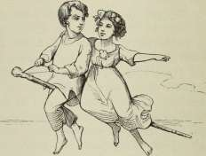
vokser og vokser, jeg kan huske, jeg kan fortælle! Lad mig se, om du har din Blomst endnu!«
Og den gamle Mand aabnede sin Psalmebog, der laa Hyldeblomsten, saa frisk, som den nylig var lagt deri, og Erindringen nikkede, og de to gamle med Guldkrone paa sad i den røde Aftensol; de lukkede Øjnene, og — og —, ja saa var Eventyret ude!«
Den lille Dreng laa i sin Seng, han vidste ikke, om han havde drømt, eller om han havde hørt det fortælle; Tepotten stod paa Bordet, men der vokste intet Hyldetræ ud af den, og den gamle Mand, som havde fortalt, var lige ved at gaa ud af Døren, og det gjorde han.
»Hvor det var dejligt!« sagde den lille Dreng. »Moder, jeg har været i de varme Lande!«
»Ja, det tror jeg nok!« sagde Moderen, »naar man faar lo svingende Kopper Hyldele til Livs, saa kommer man nok til de varme Lande!« — og hun dækkede godt til om ham, at han ikke skulde forkøle sig. »Du har nok sovet, medens jeg sad og skændtes med ham, om det var en Historie eller et Eventyr!«
»Og hvor er Hyldemor?« spurgte Drengen.
»Hun er paa Tepotten!« sagde Moderen, »og der kan hun blive!«
20*
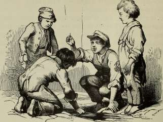
Stoppenaalen.
Der var engang en Stoppenaal, der var saa fin paa det, at hun bildte sig ind, at hun var en Synaal.
»Ser nu bare til, hvad I holde paa!« sagde Stoppenaalen til Fingrene, der tog den frem. »Tab mig ikke! falder jeg paa Gulvet, er jeg i Stand til aldrig at findes igen, saa fin er jeg!«
»Der er Maade med!« sagde Fingrene, og saa klemte de hende om Livet.
»Ser I, jeg kommer med Suite!« sagde Stoppenaalen, og saa trak den en lang Traad efter sig, men som dog ikke havde Knude.
Fingrene styrede Naalen lige mod Kokkepigens Tøffel, hvor Overlæderet var revnet, og nu skulde det sys sammen.
»Det er nedrigt Arbejde!« sagde Stoppenaalen. »Jeg gaar aldrig igennem, jeg knækker! jeg knækker!« — og saa knak hun. »Sagde jeg det ikke nok!« sagde Stoppenaalen, »jeg er for fin!«
»Nu duer hun ikke til noget,« mente Fingrene, men de
maalte dog holde fast, Kokkepigen dryppede Lak paa hende og stak hende saa foran i sit Tørklæde.
»Se, nu er jeg en Brystnaal!« sagde Sloppenaalen; »jeg vidste nok, at jeg kom* til Ære; naar man er noget, bliver man altid til noget!« og saa lo hun indvendig, for man kan aldrig se udvendig paa en Stoppenaal, at den ler; der sad hun nu saa stolt, som om hun kørte i Karet, og saa til alle Sider.
»Maa jeg have den Ære at spørge, om De er af Guld?« spurgte hun Knappenaalen, som var Nabo. »De har et dejligt Udseende og Deres eget Hoved, men lille er det! De maa se til, at det vokser ud, thi man kan ikke alle lakkes paa Enden!« og saa rejste Stoppenaalen sig saa stolt i Vejret, at hun gik af Tørklædet og i Vadsken, just som Kokkepigen skyllede ud.
»Nu gaa vi paa Rejse!« sagde Stoppenaalen; »bare jeg ikke bliver borte!« men det blev hun.
»Jeg er for fin for denne Verden,« sagde hun, da hun sad i Rendestenen. »Jeg har min gode Bevidsthed, og det er altid en lille Fornøjelse!« og saa holdt Stoppenaalen sig rank og tabte ikke sit gode Humør.
Og der sejlede alle Slags hen over den, Pinde, Straa, Stumper af Aviser. »Se, hvor de sejle!« sagde Stoppenaalen. »De veed ikke hvad der stikker under dem! jeg stikker! jeg sidder her. Se, der gaar nu en Pind, den tænker paa ingenting i Verden uden paa »Pind«, og det er den selv; der flyder et Straa, se, hvor det svajer, se, hvor det drejer; tænk ikke saa meget paa dig selv, du kunde støde dig paa Brostenene! — der flyder en Avis! — glemt er det, som slaar i den, og dog breder den sig! — Jeg sidder taalmodig og stille! jeg veed hvad jeg er, og det bliver jeg!«
En Dag var der noget, der skinnede saa dejligt tæt ved, og saa troede Stoppenaalen, at det var en Diamant, men det var et Flaskeskaar, og da det skinnede, saa talte Stoppenaalen til det og gav sig til Kende som Brystnaal. »De er nok en Diamant!« — »Ja, jeg er saadant noget!« og saa
troede den ene om den anden, at de vare rigtig kostbare, og saa talte de om, hvor hovmodig Verden var.
»Ja, jeg har boet i en Æske hos en Jomfru,« sagde Stoppenaalen, »og den Jomfru var Kokkepige; hun havde paa hver Haand fem Fingre, men noget saa indbildsk, som de fem Fingre, har jeg ikke kendt, og saa vare de kun til for at holde mig, tage mig af Æske og lægge mig i Æske.«
»Var der Glans ved dem?« spurgte Flaskeskaaret.
»Glans!« sagde Stoppenaalen, »nej, der var Hovmod! De vare fem Brødre, alle fødte »Fingre«, de holdt sig ranke op til hverandre, skønt af forskellig Længde; den yderste af dem, Tommeltot, var kort og tyk, han gik uden for Ge-ledet, og saa havde han kun eet Knæk i Ryggen, han kunde kun bukke een Gang, men han sagde, at blev han hugget af et Menneske, saa var hele det Menneske spoleret for Krigstjeneste. Slikpot kom i sødt og surt, pegede paa Sol og Maane, og det var ham, der klemte, naar de skrev; Langemand saa de andre over Hovedet; Guldbrand gik med Guldring om Maven, og lille Per Spillemand bestilte ikke noget, og deraf var han stolt. Pral var det, og Pral blev det, og saa gik jeg i Vadsken!«
»Og nu sidde vi og glinse!« sagde Glasskaarel. I det samme kom der mere Vand i Rendestenen, den strømmede over alle Bredder og rev Glasskaaret med sig.
»Se, nu blev det forfremmet!« sagde Stoppenaalen, »jeg bliver siddende, jeg er for fin, men det er min Stolthed, og den er agtværdig!« og saa sad den rank og havde mange Tanker.
»Jeg skulde næslen tro, at jeg er født af en Solslraale, saa fin er jeg; synes jeg ikke ogsaa, at Solen altid søger mig under Vandet. Ak, jeg er saa lin, at min Moder ikke kan finde mig; havde jeg mit gamle Øje, som knak, saa tror jeg, at jeg kunde græde! — skjønt jeg gjorde det ikke — eræde det er ikke fint.«
o
En Dag laa der nogle Gadedrenge og ragede i Rendestenen, hvor de fandt gamle Søm, Skillinger og saadant noget. Det var Griseri, men del var nu deres Fornøjelse.
STOPPEXAALKX.
311
»Av!« sagde den ene, han stak sig paa Stoppenaalen. »Det er ogsaa en Fyr!«
»Jeg er ingen Fyr, jeg er en Frøken!« sagde Stoppenaalen, men ingen hørte det; Lakket var gaaet af den, og sort var den bleven, men sort gør tyndere, og saa troede den, at den var endnu finere end før.
»Der kommer en Æggeskal sejlende!« sagde Drengene, og saa stak de Stoppenaalen fast i Skallen.
»Hvide Vægge og selv sort!« sagde Stoppenaalen, »det klæder! saa kan man dog se mig! — bare jeg ikke bliver søsyg, for saa knækker jeg mig!« men den blev ikke søsyg, og den knak sig ikke.
»Det er godt mod Søsyge at have Staalmave og saa altid huske paa, at man er lidt mere end et Menneske! nn er mit gaaet over! jo finere man er, desto mere kan man holde nd.«
»Krask!« sagde Æggeskallen, der gik et Vognmandslæs over den. »Hn, hvor det klemmer!« sagde Stoppenaalen, »nn bliver jeg dog søsyg! jeg knækker! jeg knækker!« men den knak ikke, skønt der gik et Vognmandslæs over, den laa paa langs — og der kan den blive liggende!
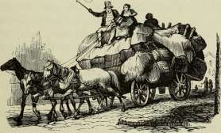
A
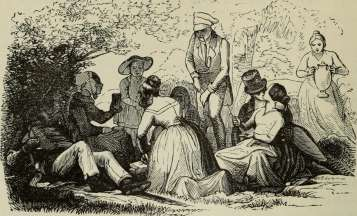
Klokken.
Om Aftenen, i de snævre Gader i den store By, naar Solen gik ned, og Skyerne skinnede som Guld oppe mellem Skorstenene, hørte tit snart den ene, snart den anden, en underlig Lyd ligesom Klangen af en Kirkeklokke, men det var kun et Øjeblik, den hørtes, for der var saadan en Rumlen med Vogne og saadan en Raaben, og det forstyrrer. »Nu ringer Aftenklokken!« sagde man, »nu gaar Solen ned!«
De, som gik uden for Byen, hvor Husene laa længere fra hverandre med Haver og smaa Marker, saa Aftenhimlen endnu prægtigere og hørte langt stærkere Klangen af Klokken; det var, som kom Lyden fra en Kirke dybt inde i den stille, duftende Skov; og Folk saa derhen og bleve ganske højtidelige. —
Nu gik mange Tider, den ene sagde til den anden: »Mon der er en Kirke derude i Skoven? Den Klokke har dog en underlig, dejlig Klang; skulle vi ikke tage derud og se lidt nærmere paa den.« Og de rige Folk de kørte, og de fattige de gik, men Vejen blev dem saa underlig lang, og da de kom til en hel Del Piletræer, der vokste ved Udkanten af
Skoven, saa satte de sig der og saa op i de lange Grene og troede, at de vare rigtigt i det grønne; Konditoren inde fra Byen kom derud og slog sit Telt op, og saa kom der nok en Konditor, og han hængte en Klokke op lige over sit Telt, og det en Klokke, som var tjæret for at kunne taale Regnen, og Knebelen manglede. Naar saa Folk tog hjem igen, sagde de, at det havde været saa romantisk, og det betyder noget ganske uden for Tevand. Tre Personer forsikrede, at de vare trængte ind i Skoven, lige til hvor den endte, og de havde altid hørt den underlige Klokkeklang, men det var for dem, ligesom den kom inde fra Byen; den ene skrev en hel Vise derom og sagde, at Klokken klang som en Moders Stemme til et kært, klogt Barn, ingen Melodi var dejligere end Klokkens Klang.
Landets Kejser blev ogsaa opmærksom derpaa og lovede, at den, som rigtig kunde opdage, hvorfra Lyden kom, skulde faa Titel af »Verdens Klokker« og det selv om det ikke var en Klokke.
Nu gik da mange til Skoven for det gode Levebrøds Skyld, men der var klin een, som kom hjem med et Slags Forklaring; ingen havde været dybt nok inde, og han da ikke heller, men han sagde dog, at Klokkelyden kom fra en meget stor Ugle i et hult Træ; det var saadan en Visdomsugle, som idelig slog sit Hoved mod Træet, men om Lyden kom fra dens Hoved eller fra den hule Stamme, det kunde han ikke endnu med Bestemthed sige, og saa blev han ansat som Verdens Klokker og skrev hvert Aar en lille Afhandling om Uglen; men lige meget vidste man.
Nu var det just en Konfirmationsdag, Præsten havde talt saa smukt og inderligt; Konfirmanderne havde været saa bevægede, det var en vigtig Dag for dem, de bleve fra Børn med eet til voksne Mennesker, Barnesjælen skulde nu ligesom flyve over i en forstandigere Person. Det var det dejligste Solskin, Konfirmanderne gik ud af Byen, og fra Skoven klang forunderlig stærkt den store, ubekendte Klokke. De fik lige straks saadan en Lyst til at komme der, og det alle paa tre nær, den ene af dem skulde hjem og prøve sin Balkjole, for
det var just den Kjole og det Bal, der var Skyld i, at hun var bleven konfirmeret denne Gang, for ellers var hun ikke kommen med; den anden var en fattig Dreng, som havde laant sin Konfirmationskjole og Støvlerne hos Værtens Søn, og dem maatte han levere af paa bestemt Klokkeslet; den tredie sagde, at han aldrig gik noget fremmed Sted, uden hans Forældre vare med, og at han altid havde været et artigt Barn, og det vilde han blive selv som Konfirmand, og det skal man ikke gøre Nar af; — men det gjorde de.
Tre af dem gik altsaa ikke med; de andre travede af Sted; Solen skinnede, og Fuglene sang, og Konfirmanderne sang med og holdt hverandre i Hænderne, for de havde jo ikke faaet Embeder endnu og vare alle Konfirmander for Vor Herre.
Men snart bleve to af de mindste trætte, og saa vendte de to om til Byen igen; to Smaapiger satte sig og bandt Kranse, de kom heller ikke med, og da de andre naaede Piletræerne, hvor Konditoren boede, saa sagde de: »Se saa, nu ere vi herude; Klokken er jo egentlig ikke til, den er bare saadant noget, man bilder sig ind!«
Da lød i det samme dybt i Skoven Klokken saa sødt og højtideligt, at fire, fem bestemte sig til dog at gaa noget længere ind i Skoven. Den var saa tæt, saa løvfuld, det var ordentligt besværligt at komme frem, Skovmærker og Anemoner vokste næsten alt for højt, blomstrende Konvolvuli og Brombærranker hang i lange Guirlander fra Træ til Træ, hvor Nattergalen sang, og Solstraalerne legede; oh, det var saa velsignet, men det var ingen Vej at gaa for Pigerne, de vilde faaet Klæderne revne itu. Der laa store Klippeblokke, begroede med Mos af alle Farver, det friske Kildevand piblede frem, og underligt sagde del ligesom »kluk, kluk!«
»Det skulde dog ikke være Klokken!« sagde en af Konfirmanderne og lagde sig ned og hørte efter. »Det maa man rigtig studere!« og saa blev han og lod de andre gaa.
De kom til et Hus af Bark og Grene, et stort Træ med vilde Æbler hældede sig hen over det, som vilde det ryste hele sin Velsignelse ud over Taget, der blomstrede med Roser;
de lange Grene laa lige hen om Gavlen, og paa den hang en lille Klokke. Skulde det være den, man havde hørt? Ja, derom vare de alle enige, paa een nær; han sagde, at den Klokke var for lille og fin til at kunne høres saa langt borte, som de havde hørt den, og at det var ganske andre Toner, som saaledes rørte et Menneskehjerte; han, som talte, var en Kongesøn, og saa sagde de andre: »Saadan en vil nu altid virre klogere.«
Saa lod de ham gaa alene, og alt som han gik, blev hans Bryst mere og mere opfyldt af Skovensomheden; men endnu hørte han den lille Klokke, som de andre vare saa fornøjede med, og imellem, naar Vinden bar fra Konditoren, kunde han ogsaa høre, hvorledes der blev sunget til Tevand; men de dybe Klokkeslag lød dog stærkere, det var, ligesom et Orgel spillede dertil, Lyden kom fra venstre, fra den Side, paa hvilken Hjertet sidder.
Nu raslede det i Busken, og der stod en lille Dreng foran Kongesønnen, en Dreng i Træsko og med en Trøje saa kort, at man ret kunde se, hvor lange Haandled han havde. De kendte begge hinanden, Drengen var just den af Konfirmanderne, som ikke kunde komme med, fordi han skulde hjem og levere Trøje og Støvler af til Værtens Søn; det havde han gjort og var nu, i Træsko og de fattige Klæder, gaaet af Sted alene, thi Klokken klang saa stærkt, saa dybt, han maatte derud.
»Saa kunne vi jo gaa sammen!« sagde Kongesønnen. Men den fattige Konfirmand med Træskoene var ganske undselig, han trak paa de korte Trøjeærmer og sagde, han var bange for, at han ikke kunde gaa saa rask med, desuden mente han, at Klokken maatte søges til højre, thi den Plads havde jo alt stort og herligt.
»Ja, saa mødes vi slet ikke!« sagde Kongesønnen og nikkede til den fattige Dreng, der gik ind i den mørkeste, mest tætte Del af Skoven, hvor Tornene rev hans fattige Klæder itu og Ansigt, Hænder og Fødder til Blods. Kongesønnen fik ogsaa nogle gode Rifter, men Solen skinnede dog paa
hans Vej, og det er ham, vi nu følge med, for en rask Knøs var han.
»Klokken vil og maa jeg finde!« sagde han, »om jeg saa skal gaa til Verdens Ende!«
De ækle Abekatte sad oppe i Træerne og grinte med alle deres Tænder. »Skal vi dænge ham!« sagde de, »skal vi dænge ham; han er en Kongesøn!«
Men han gik ufortrøden dybere og dybere ind i Skoven, hvor der vokste de forunderligste Blomster; der stod hvide Stjernelillier med blodrøde Støvtraade, himmelblaa Tulipaner, som gnistrede i Vinden, og Æbletræer, hvor Æblerne ganske og aldeles saa ud som store, skinnende Sæbebobler; tænk blot, hvor de Træer maatte straale i Solskinnet. Rundt om de dejligste grønne Enge, hvor Hjort og Hind legede i Græsset, vokste prægtige Ege og Bøge, og var et af Træerne revnet i Barken, saa vokste her Græs og lange Ranker i Revnen; der var ogsaa store Skovstrækninger med stille Indsøer, hvori hvide Svaner svømmede og slog med Vingerne. Kongesønnen stod tit stille og lyttede, ofte troede han, at det var fra en af disse dybe Søer, Klokken klang op til ham, men saa mærkede han dog nok, at det ikke var derfra, men endnu dybere inde i Skoven, at Klokken klang.
Nu gik Solen ned, Luften skinnede rød som Ild, det blev saa stille, saa stille i Skoven, og han sank paa sine Knæ, sang sin Aftenpsalme og sagde: »Aldrig finder jeg, hvad jeg søger! nu gaar Solen ned, nu kommer Natten, den mørke Nat; dog een Gang kan jeg maaske endnu se den runde, røde Sol, før den ganske synker bag Jorden; jeg vil stige op paa Klipperne der, de rejse sig i Højde med de største Træer.«
Og han greb i Ranker og Rødder, »klatrede op ad de vaade Stene, hvor Vandslangerne snoede sig, hvor Skruptudsen ligesom gøede ad ham; — men op kom han, før Solen endnu ganske var nede, set fra denne Højde; oh, hvilken Pragt! Havet, det store, herlige Hav, der væltede sine lange Bølger mod Kysten, strakte sig ud foran ham, og Solen stod som et stort, skinnende Alter derude, hvor Hav og Himmel mødtes,
KLOKKEN.
317
alt smeltede sammen i glødende Farver, Skoven sang, og Havet sang, og hans Hjerte sang med, den hele Natur var en stor, hellig Kirke, hvori Træer og svævende Skyer vare Pillerne, Blomster og Græs det vævede Fløjls Klæde, Himlen selv den store Kuppel; deroppe slukkedes de røde Farver, idet Solen forsvandt; men Millioner Stjerner tændtes, Millioner Diamantlamper skinnede da, og Kongesønnen bredte sine Arme ud mod Himlen, mod Havet og Skoven, — og i det samme kom, fra den højre Sidegang, den fattige Konfirmand med de korte Ærmer og med Træskoene; han var kommen der lige saa tidlig, kommen der ad sin Vej, og de løb hinanden i Møde og holdt hinanden i Hænderne i Naturens og Poesiens store Kirke, og over dem klang den usynlige, hellige Klokke, salige Aander svævede i Dans om den til et jublende Halleluja.
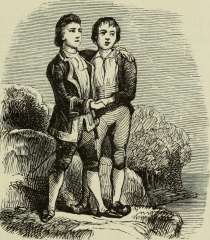
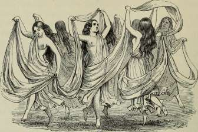
Elverhøj.
Der løb saa vimse nogle Firben i Sprækkerne paa et gammelt Træ; de kunde godt forstaa hverandre, i or de talte Firbenesproget.
»Nej, hvor det rumler og brumler i den gamle Elverhøj!« sagde den ene Firben; »jeg har for del Spektakel nu ikke i to Nætter lukket mine Øjne, og jeg knude lige saa godt ligge og have Tandpine, for saa sover jeg heller ikke!«
»Der er noget paa Færde derinde!« sagde den anden Firben, »Højen lade de staa paa fire røde Pæle lige til Hanegal, der bliver ordentlig luftet ud, og Elverpigerne have lært ny Danse, som der trampes i. Der er noget paa Færde!«
»Ja, jeg har talt med en Regnorm af mit Bekendtskab,« sagde den tredie Firben; »Regnormen kom lige op af Højen, hvor den, Nætter og Dage, havde rodet i Jorden; den havde hørt en hel Del, se kan den jo ikke, det elendige Dyr, men føle sig for og høre efter, det forstaar den. De vente fremmede i Elverhøj, fornemme fremmede, men hvem, vilde Regnormen ikke sige, eller han vidste det nok ikke. Alle Lygtemændene ere tilsagte for at gøre Fakkeltog, som man kalder
det, og Sølv og Guld, hvoraf der er nok i Højen, 1)1 i velpoleret og stillet ud i Maaneskin.«
»Hvem kan dog de fremmede være!« sagde alle Firbenene. »Hvad mon der er paa Færde? Hør, hvor det summer! hør, hvor det brummer!«
Lige i det samme skiltes Elverhøj ad, og en gammel Elverpige, rygløs var hun, men ellers meget anstændigt klædt paa, kom trippende ud, det var den gamle Elverkonges Husholderske, hun var langt ude af Familien og havde Ravhjerte paa Panden. Benene gik saa flinke paa hende: trip, trip! hille den, hvor hun kunde trippe og det lige ned i Mosen til Natravnen.
»De bliver inviteret til Elverhøj, og det i Nat!« sagde hun, »men vil De ikke først gøre os en stor Tjeneste, at tage Dem af Indbydelserne! Gavn maa De gøre, da De ikke selv holder Hus! Vi faa nogle højfornemme fremmede, Troldfolk, der have noget al sige, og derfor vil den gamle Elverkonge vise sig!«
»Hvem skal inviteres?« spurgte Natravnen.
»Ja, til det store Bal kan al Verden komme, selv Mennesker, naar de bare kunne tale i Søvne eller gøre saadan en lille Smule af hvad der falder i vor Art. Men til det første Gilde skal der være strengt Udvalg, vi ville kun have de allerfornemste. Jeg har stridt med Elverkongen, thi jeg holder for, vi kunne ikke engang have Spøgelser med. Havmanden og hans Døtre maa først inviteres, de holde vel ikke meget af at komme paa det tørre, men de skal nok hver faa en vaad Sten at sidde paa eller noget bedre, og saa tænker jeg nok, de ikke sige af denne Gang. Alle gamle Trolde af første Klasse med Hale, Aa man den og Nisserne maa vi have, og saa tænker jeg, at vi kunne ikke forbigaa Gravsoen, Helhesten og Kirkegrimen; de høre jo rigtignok med til Gejstligheden, som ikke ere af vore Folk, men det er nu deres Embede, de ere os nær i Familie, og de gøre stadigen Visitter. <«
»Bra!« sagde Natravnen og fløj af Sted for at invitere.
Elverpigerne dansede allerede paa Elverhøj, og de dansede
',V20 ELVERHØJ.
med Langsjal, vævet af Taage og Maaneskin, og det ser nydeligt ud for dem, der synes om det Slags. Midt inde i Elverhøj var den store Sal ordentlig pudset op; Gulvet var vadsket med Maaneskin, og Væggene vare gnedne med Heksefedt, saa at de skinnede som Tulipanblade foran Lyset. I Køkkenet var der fuldt op med Frøer paa Spid, Snogeskind med smaa Børnefingre i og Salater af Paddehattefrø, vaade Musesnuder og Skarntyde, 01 af Mosekonens Bryg, skinnende Salpetervin fra Gravkælderen, alt meget solidt; rustne Søm og Kirkerude-glas hørte til Knaset.
Den gamle Elverkonge lod sin Guldkrone polere i stødt Griffel, det var Duksegriffel, og det er meget vanskeligt for Elverkongen at faa Duksegriffel. I Sovekamret hængte de Gardiner op og hæftede dem fast med Snogespyt. Jo, der var rigtignok en Summen og Brummen.
»Nu skal her ryges med Krølhaar og Svinebørster, saa tror jeg, at jeg har gjort mit!« sagde den gamle Elverpige.
»Søde Fader!« sagde den mindste af Døtrene, »faar jeg saa at vide, hvem de tornemme fremmede ere?«
»Naa da!« sagde han, »saa maa jeg vel sige det! To af mine Døtre maa holde sig parate til Giftermaal! To blive vist bortgiftede. Troldgubben oppe fra Norge, han, der bor i det gamle Dovrefjeld og har mange Klippeslotte af Kampesten og et Guldværk, som er bedre, end man tror, kommer herned med sine to Drenge, de skulle søge sig en Kone ud; Troldgubben er saadan en rigtig gammel, ærlig norsk Gubbe, lystig og ligefrem; jeg kender ham fra gamle Dage, da vi drak dus; han var hernede at hente sin Kone, nu er hun død, hun var en Datter af Klintekongen paa Møen. Han tog sin Kone paa Kridt, som man siger! Oh, hvor jeg længes efter den norske Troldgubbe! Drengene siger man, skulle være nogle uvorne, kæphøje Unger, men man kan jo ogsaa gøre dem Uret, og de blive nok gode, naar de blive gemte. Lad mig se, at I sætte Skik paa dem!«
»Og naar komme de?« spurgte den ene Datter.
»Det kommer an paa Vind og Vejr!« sagde Elverkongen. »De rejse økonomisk! De komme herned med Skibslejlighed.
Jeg vilde, at de skulde gaa over Sverrig, men den gamle hælder endnu ikke til den Side! Han følger ikke med Tiderne, og det kan jeg ikke lide!«
I det samme kom der to Lygtemænd hoppende, den ene hurtigere end den anden, og derfor kom den ene først.
»De komme! de komme!« raabte de.
»Giv mig min Krone, og lad mig staa i Maaneskinnet!« sagde Elverkongen.
Døtrene løftede paa Langsjalerne og nejede lige til Jorden.
Der stod Troldgubben fra Dovre, med Krone af hærdede Istappe og polerede Grankogler, iøvrigt havde han Bjørnepels og Kanestøvler; Sønnerne derimod gik barhalsede og uden Seler, for de vare Kraftmænd.
»Er det en Høj?« spurgte den mindste af Drengene og pegede paa Elverhøj. »Det kalde vi oppe i Norge for et Hul!«
»Gutter!« sagde den gamle. »Hul gaar indad, Høj gaar opad! har I ikke Øjne i Hovedet!«
Det eneste, der undrede dem hernede, sagde de, var, at de saaledes uden videre kunde forstaa Sproget.
»Skab jer nu ikke!« sagde den gamle, »man kunde tro, at I var ikke rigtig gennembagte!«
Og saa gik de ind i Elverhøj, hvor der rigtignok var fint Selskab, og det i en Hast, saa man skulde tro, at de vare blæste sammen, og nydeligt og net var der indrettet for enhver. Havfolkene sad til Bords i store Vandkar; de sagde, det var, ligesom de vare hjemme. Alle holdt de Bordskik, undtagen de to smaa norske Trolde, de lagde Benene op paa Bordet, men de troede nu, at alting klædte dem.
»Fødderne af Fadet!« sagde den gamle Trold, og saa lystrede de, men de gjorde det da ikke lige straks. Deres Borddame kildrede de med Grankogler, som de havde med i Lommen, og saa trak de deres Støvler af for at sidde mageligt og gav hende Støvlerne at holde, men Faderen, den gamle Dovretrold, han var rigtignok ganske anderledes; han fortalte saa dejligt om de stolte norske Fjelde og om Fosser, der styrtede skumhvide ned med et Bulder som Tordenskrald og Orgelklang; han fortalte om Laksen, der sprang op mod
H. C. Andersen: Eventyr og Historier. 21
de styrtende Vande, naar Nøkken spillede paa Guldharpe. Han fortalte om de skinnende Vinternætter, naar Kanebjælderne klang, og Knøsene løb med brændende Blus hen over den blanke Is, der var saa gennemsigtig, at de saa Fiskene blive bange under deres Fødder. Jo, han kunde fortælle, saa at man saa og hørte, hvad han sagde; det var, ligesom Savmøllerne gik, som om Karle og Piger sang Viser og dansede Hallingedans; hussa! lige med eet gav Troldgubben den gamle Elverpige et Morbrodersmask, det var et ordentligt Kys, og de vare dog slet ikke i Familie.
Nu maatte Elverpigerne danse, og det baade simpelt og det med at trampe, og det klædte dem godt; saa kom Kunstdansen, eller som det kaldtes »at træde uden for Dansen«, hille den, hvor de kunde strække Ben; man vidste ikke, hvad der var Ende, og hvad der var Begyndelse, man vidste ikke, hvad der var Arme, og hvad der var Ben, det gik imellem hinanden ligesom Savspaaner, og saa snurrede de rundt, saa Helhesten fik ondt og maatte gaa fra Bordet.
»Prrrrr!« sagde Troldgubben, »det er Kommers med Bentøjet! Men hvad kan de mere end danse, strække Ben og gøre Hvirvelvind?«
»Det skal du faa at vide!« sagde Elverkongen, og saa kaldte han den yngste af sine Døtre frem; hun var saa spinkel og klar som Maaneskin, hun var den fineste af alle Søstrene; hun tog en hvid Pind i Munden, og saa var hun rent borte, det var hendes Kunst.
Men Troldgubben sagde, at den Kunst kunde han ikke lide hos sin Kone, og han troede heller ikke, at hans Drenge holdt af den.
Den anden kunde gaa ved Siden af sig selv, ligesom om hun havde Skygge, og det har nu Troldfolk ikke.
Den tredie var af et ganske andet Slags, hun havde lært i Mosekonens Bryggerhus, og det var hende, som forstod at spække Elietrunter med Sankt-Hans-Orme.
»Hun bliver en god Husmoder!« sagde Troldgubben, og saa klinkede han med Øjnene, for han vilde ikke drikke saa meget.
Nu kom den fjerde Elverpige, hun havde en stor Guldharpe at spille paa, og da hun slog paa den første Streng, løftede alle det venstre Ben, for Troldfolkene ere kejtbenede, og da hun slog den anden Streng, maatte de alle gøre, hvad hun vilde.
»Det er et farligt Fruentimmer!« sagde Troldgubben, men begge Sønner gik ud af Højen, for nu vare de kede af det.
»Og hvad kan den næste Datter?« spurgte Troldgubben.
»Jeg har lært at holde af de Norske!« sagde hun, »og aldrig gifter jeg mig, uden at jeg kan komme til Norge!«
Men den mindste af Søstrene hviskede til Troldgubben: »Det er kun, fordi hun har hørt af en norsk Vise, at naar Verden forgaar, saa vil dog de norske Klipper staa som Bauta, og derfor vil hun derop, for hun er saa bange for at forgaa.«
»Ho, ho!« sagde Troldgubben, »slap det der ud. Men hvad kan den syvende og sidste?«
»Den sjette kommer før den syvende!« sagde Elverkongen, for han kunde regne, men den sjette vilde ikke rigtig komme frem.
»Jeg kan kun sige Folk Sandhed!« sagde hun, »mig bryder ingen sig om, og jeg har nok at gøre med at sy paa mit Ligtøj!«
Nu kom den syvende og sidste, og hvad kunde hun? Ja, hun kunde fortælle Eventyr og det saa mange, hun vilde.
»Her er alle mine fem Fingre!« sagde Troldgubben, »fortæl mig et om hver!«
Og Elverpigen tog ham om Haandleddet, og han lo, saa det klukkede i ham, og da hun kom til Guldbrand, der havde Guldring om Livet, ligesom den vidste, at der skulde være Forlovelse, sagde Troldgubben: »Hold fast hvad du har, Haanden er din! Dig vil jeg selv have til Kone!«
Og Elverpigen sagde, at der var endnu tilbage om Guldbrand og om lille Per Spillemand.
»Dem skulle vi høre til Vinter!« sagde Troldgubben, »og om Granen skulle vi høre og om Birken og om Huldregaverne og den klingrende Frost! Du skal nok komme til at
21*
ELVERHØJ.
fortælle, for det gør endnu ingen rigtig deroppe, og saa skulle vi sidde i Stenstuen, hvor Fyrrespaanen brænder, og drikke Mjød af de gamle norske Kongers Guldhorn; Nøkken har skænket mig et Par Stykker! og naar vi saa sidde, saa kommer Garbo en og gør Visit; han synger dig alle Sæterpigens Sange. Det skal blive lystigt! Laksen vil springe i Fossen og slaa mod Stenvæggen, men den kommer dog ikke ind! — Ja, du kan tro, der er godt i det kære, gamle Norge! Men hvor ere Gutterne?«
Ja, hvor vare Gutterne. De løb omkring paa Marken og
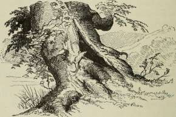
blæste Lygtemændene ud, der kom saa skikkeligt og vilde gøre Fakkeltog.
»Er det at føjte om?« sagde Troldgubben, »nu har jeg taget en Moder til eder, nu kunne I tage en Moster!«
Men Gutterne sagde, at de vilde helst holde en Tale og drikke dus, gifte sig, det havde de ingen Lyst til. — Og saa holdt de Tale, drak dus og satte Glasset paa Neglen for at vise, at de havde drukket ud, trak saa Kjolerne af og lagde sig paa Bordet at sove, for de generede sig ikke. Men Troldgubben dansede Stuen rundt med sin unge Brud og byttede Støvler med hende, for det er finere end at bytte Ringe.
»Nu galer Hanen!« sagde den gamle Elverpige, som holdt
Hus. »Nu maa vi lukke Vinduesskodderne, at ikke Solen brænder os inde!«
Og saa lukkede Højen sig.
Men udenfor løb Firbenene op og ned ad det revnede Træ, og den ene sagde til den anden:
»Oh, hvor jeg godt kunde lide den norske Troldgubbe!«
»Jeg holder mere af Drengene!« sagde Regnormen, men den kunde jo ikke se, det elendige Dyr.
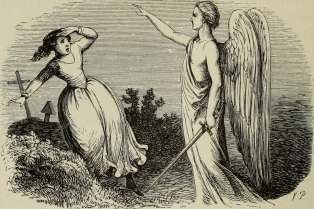
De røde Sko.
Der var en lille Pige, saa fin og saa nydelig, men om Sommeren maatte hun altid gaa med bare Fødder, for hun var fattig, og om Vinteren med store Træsko, saa at den lille Vrist blev ganske rød, og det saa grueligt.
Midt i Bondebyen boede den gamle Mor Skomagers; hun sad og syede, saa godt hun kunde det, af røde, gamle Klædes-strimler et Par smaa Sko, ganske kluntede, men godt mente vare de, og dem skulde den lille Pige have. Den lille Pige hed Karen.
Just den Dag hendes Moder blev begravet, fik hun de røde Sko og havde dem første Gang paa; det var jo rigtignok ikke noget at sørge med, men hun havde nu ingen andre, og saa gik hun med bare Ben i dem bag efter den fattige Straakiste.
Da kom der i det samme en stor, gammel Vogn, og i den sad der en stor, gammel Frue; hun saa paa den lille Pige og havde ondt af hende, og saa sagde hun til Præsten: »Hør, giv mig den lille Pige, saa skal jeg være god imod hende!«
Og Karen troede, det var alt sammen for de røde Sko, men den gamle Frue sagde, at de vare gruelige, og de bleve
brændte, men Karen selv blev klædt paa rent og net; hun maatte lære at læse og sy, og Folk sagde, at hun var nydelig, men Spejlet sagde: »Du er meget mere end nydelig, du er dejlig!«
Da rejste Dronningen engang gennem Landet, og hun havde med sig sin lille Datter, der var en Prinsesse, og Folk strømmede til uden for Slottet, og der var da Karen ogsaa, og den lille Prinsesse stod i sine hvide Klæder i et Vindue og lod sig se paa; hun havde hverken Slæb eller Guldkrone, men dejlige røde Saffians Sko; de vare rigtignok anderledes nette, end de Mor Skomagers havde syet til lille Karen. Intet i Verden kunde dog lignes ved røde Sko!
Nu var Karen saa gammel, at hun skulde konfirmeres; ny Klæder fik hun, og ny Sko skulde hun ogsaa have. Den rige Skomager inde i Byen tog Maal af hendes lille Fod; det var hjemme i hans egen Stue, og der stod store Glas-skabe med yndige Sko og blanke Støvler. Det saa nydeligt ud; men den gamle Frue saa ikke godt, og saa havde hun ingen Fornøjelse deraf; midt imellem Skoene stod et Par røde, ganske som de Prinsessen havde baaret; hvor de vare smukke! Skomageren sagde ogsaa, at de vare syede til et Grevebarn, men de havde ikke passet.
»Det er nok Blanklæder!« sagde den gamle Frue, »de skinne!«
»Ja, de skinne!« sagde Karen; og de passede, og de bleve købte; men den gamle Frue vidste ikke af, at de vare røde, thi hun havde aldrig tilladt Karen at gaa til Konfirmation med røde Sko, men det gjorde hun nu.
Alle Mennesker saa paa hendes Fødder, og da hun gik op ad Kirkegulvet til Kordøren, syntes hun, at selv de gamle Billeder paa Begravelserne, disse Portrætter af Præster og Præstekoner, med stive Kraver og lange, sorte Klæder, hæftede Øjnene paa hendes røde Sko, og kun paa disse tænkte hun, da Præsten lagde sin Haand paa hendes Hoved og talte om den hellige Daab, om Pagten med Gud, og at hun nu skulde være et stort, kristent Menneske; og Orgelet spillede saa høj-
tideligt, de smukke Børnestemmer sang, og den gamle Kantor sang, men Karen tænkte kun paa de røde Sko.
Om Eftermiddagen vidste da den gamle Frue af alle Mennesker, at Skoene havde været røde, og hun sagde, at det var stygt, at det passede sig ikke, og at Karen herefter, naar hun gik i Kirke, skulde altid gaa med sorte Sko, selv om de vare gamle.
Næste Søndag var der Altergang, og Karen saa paa de sorte Sko, hun saa paa de røde — og saa saa hun paa de røde igen og tog de røde paa.
Det var dejligt Solskinsvejr; Karen og den gamle Frue gik ad Stien gennem Kornet; der støvede det lidt.
Ved Kirkedøren stod en gammel Soldat med en Krykkestok og med et underligt langt Skæg, det var mere rødt end hvidt, for det var rødt; og han bøjede sig lige ned til Jorden og spurgte den gamle Frue, om han maatte tørre hendes Sko af. Og Karen strakte ogsaa sin lille Fod ud. »Se hvilke dejlige Dansesko!« sagde Soldaten, »sid fast, naar I danse!« og saa slog han med Haanden paa Saalerne.
Og den gamle Frue gav Soldaten en lille Skilling, og saa gik hun med Karen ind i Kirken.
Og alle Mennesker derinde saa paa Karens røde Sko, og alle Billederne saa paa dem, og da Karen knælede for Alteret og satte Guldkalken for sin Mund, tænkte hun kun paa de røde Sko, og det var, som de svømmede om i Kalken for hende; og hun glemte at synge sin Psalme, hun glemte at læse sit »Fadervor«.
Nu gik alle Folk fra Kirke, og den gamle Frue steg ind i sin Vogn. Karen løftede Foden for at stige bag efter, da sagde den gamle Soldat, som stod tæt ved: »Se hvilke dejlige Dansesko!« og Karen kunde ikke lade være, hun maatte gøre nogle Dansetrin, og da hun begyndte, bleve Benene ved at danse, det var, ligesom Skoene havde faaet Magt over plem; hun dansede omkring Kirkehjørnet, hun kunde ikke lade være, Kusken maatte løbe bag efter og tage fat paa hende, og han løftede hende ind i Vognen, men Fødderne bleve ved at danse, saa hun sparkede saa grueligt den gode,
gamle Frue. Endelig fik de Skoene af, og Benene kom i Ro.
Hjemme bleve Skoene satte op i et Skab, men Karen kunde ikke lade være at se paa dem.
Nu laa den gamle Frue syg, de sagde, at hun kunde ikke leve; plejes og passes skulde hun, og ingen var nærmere til det end Karen; men henne i Byen var der et stort Bal, Karen var inviteret; — hun saa paa den gamle Frue, der jo dog ikke kunde leve, hun saa paa de røde Sko, og det syntes hun, der ingen Synd var i; — hun tog de røde Sko paa, det kunde hun jo ogsaa nok; — men saa gik hun paa Bal, og saa begyndte hun at danse.
Men da hun vilde til højre, saa dansede Skoene til venstre, og da hun vilde op ad Gulvet, saa dansede Skoene ned ad Gulvet, ned ad Trappen, gennem Gaden og ud af Byens Port. Danse gjorde hun, og danse maatte hun, lige ud i den mørke Skov.
Da skinnede det oppe mellem Træerne, og hun troede, at det var Maanen, for det var et Ansigt, men det var den gamle Soldat med det røde Skæg; han sad og nikkede og sagde: »Se hvilke dejlige Dansesko!«
Da blev hun forfærdet og vilde kaste de røde Sko, men de hang fast, og hun flængede sine Strømper af, men Skoene vare voksede fast til hendes Fødder, og danse gjorde hun, og danse maatte hun, over Mark og Eng, i Regn og Solskin, ved Nat og ved Dag, men om Natten var det grueligst.
Hun dansede ind paa den aabne Kirkegaard, men de døde der dansede ikke, de havde noget meget bedre at bestille end at danse; hun vilde sætte sig paa den fattiges Grav, hvor den bitre Regnfang groede, men for hende var ikke Ro eller Hvile, og da hun dansede hen imod den aabne Kirkedør, saa hun der en Engel i lange, hvide Klæder, med Vinger, som naaede ham fra Skuldrene ned til Jorden, hans Ansigt var strengt og alvorligt, og i Haanden holdt han et Sværd, saa bredt og skinnende.
»Danse skal du!« sagde han, »danse paa dine røde Sko, til du bliver bleg og kold, til din Hud skrumper sammen
DE RØDE SKO.
som en Benrad! danse skal du fra Dør til Dør, og hvor der bo stolte, forfængelige Børn, skal du banke paa, saa at de høre dig og frygte dig! Danse skal du, danse «
»Naade!« raabte Karen. Men hun hørte ikke, hvad Engelen svarede, thi Skoene bar hende gennem Laagen, ud paa Marken, over Vej og over Sti, og altid maatte hun danse.
En Morgenstund dansede hun forbi en Dør, hun kendte godt; indenfor lød Psalmesang, de bar en Kiste ud, som var pyntet med Blomster; da vidste hun, at den gamle Frue var død, og hun syntes, at nu var hun forladt af alle og forbandet af Guds Engel.
Danse gjorde hun, og danse maatte hun, danse i den mørke Nat. Skoene bar hende af Sted over Tjørne og Stubbe, og hun rev sig til Blods, og hun dansede hen over Heden til et lille, ensomt Hus. Her vidste hun, at Skarpretteren boede, og hun bankede med Fingeren paa Ruden og sagde:
»Kom ud! — kom ud! — Jeg kan ikke komme ind, for jeg danser!«
Og Skarpretteren sagde: »Du veed nok ikke, hvem jeg er? Jeg hugger Hovedet af de onde Mennesker, og jeg kan mærke, at min Økse dirrer!«
»Hug ikke Hovedet af mig!« sagde Karen, »for saa kan jeg ikke angre min Synd! men hug mine Fødder af med de røde Sko.«
Og saa skriftede hun hele sin Synd, og Skarpretteren huggede Fødderne med de røde Sko af hende; men Skoene dansede med de smaa Fødder hen over Marken ind i den dybe Skov.
Og han snittede hende Træben og Krykker, lærte hende en Psalme, den Synderne altid synge, og hun kyssede den Haand, som havde ført Øksen, og gik hen over Heden.
»Nu har jeg lidt nok for de røde Sko!« sagde hun, »nu vil jeg gaa i Kirke, at de kunne se mig!« og hun gik nok saa rask mod Kirkedøren, men da hun kom der, dansede de røde Sko foran hende, og hun blev forfærdet og vendte om.
Hele Ugen igennem var hun bedrøvet og græd mange, tunge Taarer, men da det blev Søndag, sagde hun: »Se saa!
nu har jeg lidt og stridt nok! jeg skulde tro, at jeg er lige saa god som mange af dem, der sidde og knejse derinde i Kirken!« og saa gik hun nok saa modig; men hun kom ikke længer end til Laagen, da saa hun de røde Sko danse foran sig, og hun forfærdedes og vendte om og angrede ret i Hjertet sin Synd.
Og hun gik hen til Præstegaarden og bad, om hun maatte komme i Tjeneste der, flittig vilde hun være og gøre alt hvad hun kunde, paa Lønnen saa hun ikke, kun at hun maatte faa Tag over Hovedet og være hos gode Mennesker. Og Præstekonen havde ondt af hende og gav hende Tjeneste. Og hun var flittig og tankefuld. Stille sad hun og hørte til, naar om Aftenen Præsten læste højt af Bibelen. Alle de smaa holdt meget af hende, men naar de talte om Pynt og Stads og at være dejlig som en Dronning, rystede hun med Hovedet.
Næste Søndag gik de alle til Kirke, og de spurgte hende, om hun vilde med, men hun saa bedrøvet, med Taarer i Øjnene, paa sine Krykker, og saa gik de andre hen at høre Guds Ord, men hun gik alene ind i sit lille Kammer; det var ikke større, end at der kunde staa en Seng og en Stol, og her satte hun sig med sin Psalmebog; og alt som hun med fromt Sind læste i den, bar Vinden Orgeltonerne fra Kirken over til hende, og hun løftede med Taarer sit Ansigt og sagde: »Oh, Gud hjælpe mig!«
Da skinnede Solen saa klart, og lige foran hende stod den Guds Engel i de hvide Klæder, ham, hun hin Nat havde set i Kirkedøren, men han holdt ikke længer det skarpe Sværd, men en dejlig grøn Gren, der var fuld af Roser, og han rørte med den ved Loftet, og det hævede sig saa højt, og hvor han havde rørt, skinnede der en Guldstjerne, og han rørte ved Væggene, og de udvidede sig, og hun saa Orgelet, som spillede, hun saa de gamle Billeder med Præster og Præstekoner; Menigheden sad i de pyntede Stole og sang af Psalme-bogen, for Kirken var selv kommen hjem til den stakkels Pige i det lille, snævre Kammer, eller ogsaa var hun kommen der hen; hun sad i Stolen hos de andre Præstens Folk,
DE RØDE SKO.
og da de havde endt Psalmen og saa op, nikkede de og sagde: »Det var ret, du kom, Karen!«
»Det var Naade!« sagde hun.
Og Orgelet klang, og Børnestemmerne i Koret lød saa blødt og dejligt. Det klare Solskin strømmede saa varmt gennem Vinduet ind i Kirkestolen, hvor Karen sad; hendes Hjerte blev saa fuldt af Solskin, af Fred og Glæde, at det brast; hendes Sjæl fløj paa Solskin til Gud, og der var der ingen, som spurgte om de røde Sko.
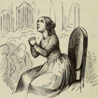
?VL~
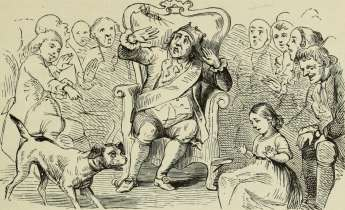
Springfyrene.
Loppen, Græshoppen og Springgaasen vilde engang se, hvem af dem der kunde springe højest, og saa inviterede de hele Verden og hvem der ellers vilde komme at se den Stads, og det var tre ordentlige Springfyre, da de kom sammen i Stuen.
»Ja, jeg giver min Datter til den, som springer højest!« sagde Kongen, »for det er saa fattigt, at de Personer skulle springe om ingenting!«
Loppen kom først frem, den havde saadanne nette Manerer og hilsede til alle Sider, for den havde Frøkenblod i sig og var vant til kun at omgaas med Mennesker, og det gør nu meget.
Nu kom Græshoppen, den var rigtignok betydelig sværere, men den havde dog ganske god Skik paa sig og var i grøn Uniform, og den var medfødt; desuden sagde Personen, at den havde en meget gammel Familie i det Land Ægypten; og at den her hjemme var højt vurderet, den var tagen lige fra Marken og sat i et Korthus, der havde tre Etager, alle sammen af Herreblade, der vendte den kulørte Side indad; der var baade Døre og Vinduer og det skaarne ud i Livet
paa Hjerter Dame. »Jeg synger saaledes,« sagde den, »at seksten indfødte Faarekyllinger, der have pebet fra smaa af og dog ikke faaet Korthus, have ved at høre mig ærgret sig endnu tyndere, end de vare!«
Begge to, baade Loppen og Græshoppen, gjorde saaledes godt rede for hvem de vare, og at de troede, de nok kunde ægte en Prinsesse.
Springgaasen sagde ikke noget, men man sagde om den, at den tænkte desto mere, og da Hofhunden kun snøftede til den, indestod han for, at Springgaasen var af god Familie; den gamle Raadmand, der havde faaet tre Ordener for at tie stille, forsikrede, at han vidste, at Springgaasen var begavet med Trolddomskraft; man kunde se paa Ryggen af den, om man fik en mild eller en streng Vinter, og det kan man ikke engang se paa Ryggen af ham, der skriver Almanakken.
»Ja, jeg siger nu ikke noget!« sagde den gamle Konge, »men jeg gaar nu altid saadan og tænker mit!«
Nu var det Springet om at gøre. Loppen sprang saa højt, at ingen kunde se det, og saa paastod de, at den slet ikke havde sprunget, og det var nu lumpent.
Græshoppen sprang kun halvt saa højt, men den sprang Kongen lige i Ansigtet, og saa sagde han, det var ækelt.
Springgaasen stod længe stille og betænkte sig, man troede til sidst, at den slet ikke kunde springe.
»Bare den ikke har faaet ondt!« sagde Hofhunden, og saa snøftede han igen til den: Rutsch! sprang den et lille, skævt Spring hen i Skødet paa Prinsessen, der sad lavt paa en Guldskammel.
Da sagde Kongen: »Det højeste Spring er at springe op til min Datter, for det er det fine af det, men sligt hører der Hoved til at falde paa, og Springgaasen har vist, at den har Hoved. Den har Ben i Panden!«
Og saa fik den Prinsessen.
»Jeg sprang dog højest!« sagde Loppen. »Men det kan være det samme! lad hende kun have den Gaaserad med
SPRINGFYRENE.
335
Pind og med Beg! jeg sprang dog højest, men der skal i denne Verden Krop til, for at de kunne se en!«
Og saa gik Loppen i fremmed Krigstjeneste, hvor man siger, at den blev slaaet ihjel.
Græshoppen satte sig ude i Grøften og tænkte over, hvorledes det egentlig gik til i Verden, og den sagde ogsaa: »Krop skal der til! Krop skal der til!« og saa sang den sin egen bedrøvelige Vise, og det er af den, vi har taget Historien, som dog gerne kunde være Løgn, om den endogsaa var trykt.
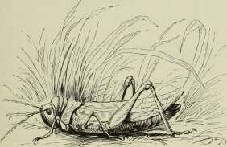
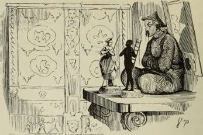
Hyrdinden og Skorstensfejeren.
Har du nogensinde set et rigtigt gammelt Træskab, ganske sort af Alderdom og skaaret ud med Snirkler og Løvværk? Just saadant et stod der i en Dagligstue, det var arvet efter Oldemoder og udskaaret med Roser og Tulipaner fra øverst til nederst; der var de underligste Snirkler, og mellem dem stak smaa Hjorte Hovedet frem med mange Takker; men midt paa Skabet stod snittet en hel Mand, han var rigtignok grinagtig at se paa, og grine gjorde han, man kunde ikke kalde det at le, han havde Gedebukkeben, smaa Horn i Panden og et langt Skæg. Børnene i Stuen kaldte ham altid Gedebuk kebens-Overogun der generalkr igskomman-dersergeanten, for det var et svært Navn at sige, og der er ikke mange, der faa den Titel; men at lade ham skære ud, det var ogsaa noget. Dog nu var han der jo! altid saa han hen til Bordet under Spejlet, for der stod en yndig, lille Hyrdinde af Porcelæn; Skoene vare forgyldte, Kjolen nydeligt hæftet op med en rød Rose, og saa havde hun Guldhat og Hyrdestav; hun var dejlig! Tæt ved hende stod en lille Skorstensfejer, saa sort som et Kul, men iøvrigt ogsaa af
Porcelæn; han var lige saa ren og pæn som nogen anden; at han var Skorstensfejer, det var jo bare noget, han forestillede; Porcelænsmageren kunde lige saa godt have gjort en Prins af ham, for det var eet.
Der stod han med sin Stige saa nydeligt, og med et Ansigt, saa hvidt og rødt som en Pige, og det var egentlig en Fejl, for lidt sort kunde han gerne have været. Han stod ganske nær ved Hyrdinden; de vare begge to stillede, hvor de stod, og da de nu vare stillede, saa havde de forlovet sig, de passede jo for hinanden, de vare unge Folk, de vare af samme Porcelæn og begge lige skrøbelige.
Tæt ved dem stod der nok en Dukke, der var tre Gange større, det var en gammel Kineser, som kunde nikke; han var ogsaa af Porcelæn og sagde, at han var Bedstefader til den lille Hyrdinde, men det kunde han nok ikke bevise; han paastod, at han havde Magt over hende, og derfor havde han nikket til Gedebukkebens-Overogundergeneralkrigskom-mandersergeanten, der friede til den lille Hyrdinde.
»Der faar du en Mand,« sagde den gamle Kineser, »en Mand, som jeg næsten tror er af Mahognitræ, han kan gøre dig til Gedebukkebens-Overogundergeneralkrigskommander-sergeantinde, han har hele Skabet fuldt af Sølvtøj, foruden hvad han har i hemmelige Gemmer.«
»Jeg vil ikke ind i det mørke Skab!« sagde den lille Hyrdinde, »jeg har hørt sige, at han har derinde elleve Porcelæns Koner!«
»Saa kan du være den tolvte!« sagde Kineseren, »i Nat, saa snart det knager i det gamle Skab, skal I have Bryllup, saa sandt som jeg er en Kineser!« og saa nikkede han med Hovedet og faldt i Søvn.
Men den lille Hyrdinde græd og saa paa sin Hjertensallerkæreste, Porcelæns Skorstensfejeren.
»Jeg tror, jeg vil bede dig,« sagde hun, »at du vil gaa med mig ud i den vide Verden, for her kunne vi ikke blive!«
»Jeg vil alt hvad du vil!« sagde den lille Skorstensfejer, »lad os straks gaa, jeg tænker nok, jeg kan ernære dig ved Professionen!«
H. C. Andersen: Eventyr og Historier. 22
»Gid vi vare vel nede af Bordet!« sagde hun, »jeg bliver ikke glad, før vi ere ude i den vide Verden!«
Og han trøstede hende og viste, hvor hun skulde sætte sin lille Fod paa de udskaarne Kanter og det forgyldte Løvværk ned om Bordbenet; sin Stige tog han ogsaa til Hjælp, og saa vare de nede paa Gulvet, men da de saa hen til det gamle Skab, var der saadant et Røre; alle de udskaarne Hjorte stak Hovederne længere frem, rejste Takkerne og drejede med Halsen! Gedebukkebens-Overogundergene-ralkrigskommandersergeanten sprang højt i Vejret og raabte over til den gamle Kineser: »Nu løbe de! nu løbe de!«
Da bleve de lidt forskrækkede og sprang hurtigt op i Skuffen til Forhøjningen.
Her laa tre, fire Spil Kort, som ikke vare komplette, og et lille Dukketeater, der var rejst op, saa godt det lod sig gøre; der blev spillet Komedie, og alle Damerne, baade Ruder og Hjerter, Kløver og Spader, sad i første Række og viftede sig med deres Tulipaner, og bag ved dem stod alle Knægtene og viste, at de havde Hoved baade foroven og forneden, saa-ledes som Spillekort have det. Komedien handlede om to, som ikke maatte faa hinanden, og Hyrdinden græd derover, for det var ligesom hendes egen Historie.
»Det kan jeg ikke holde ud!« sagde hun. »Jeg maa op af Skuffen!« men da de kom paa Gulvet og saa op til Bordet, saa var den gamle Kineser vaagnet og rokkede med hele Kroppen, han var jo en Klump forneden.
»Nu kommer den gamle Kineser!« skreg den lille Hyrdinde, og saa faldt hun lige ned paa sine Porcelæns Knæ, saa bedrøvet var hun.
»Jeg faar en Tanke,« sagde Skorstensfejeren, »skulle vi krybe ned i den store Potpourrikrukke, der staar i Krogen; der kunne vi ligge paa Roser og Lavendler og kaste ham Salt i Øjnene, naar han kommer.«
»Det kan ikke forslaa!« sagde hun, »desuden veed jeg, at den gamle Kineser og Potpourrikrukken have været forlovede, og der bliver altid lidt Godhed tilbage, naar man saadan
har staaet i Forhold; nej, der er ikke andet for end at gaa ud i den vide Verden!«
»Har du virkelig Mod til at gaa med mig ud i den vide Verden?« spurgte Skorstensfejeren. »Har du betænkt, hvor stor den er, og at vi aldrig mere kunne komme her tilbage?«
»Det har jeg!« sagde hun.
Og Skorstensfejeren saa ganske stift paa hende, og saa sagde han: »Min Vej gaar gennem Skorstenen! har du virkelig Mod til at krybe med mig gennem Kakkelovnen, baade gennem Tromlen og Røret? saa komme vi ud i Skorstenen, og der forstaar jeg at bruge mig! vi stige saa højt, at de ikke kunne naa os, og øverst oppe er der et Hul ud til den vide Verden!«
Og han førte hende hen til Kakkelovnsdøren.
»Der ser sort ud!« sagde hun, men hun gik dog med ham, baade gennem Tromlen og gennem Røret, hvor der var den bælgmørke Nat.
»Nu ere vi i Skorstenen!« sagde han, »og se! se! ovenover skinner den dejligste Stjerne!«
Og det var en virkelig Stjerne paa Himlen, der skinnede lige ned til dem, ligesom den vilde vise dem Vejen. Og de kravlede, og de krøb, en gruelig Vej var det, saa højt, saa højt; men han løftede og lettede, han holdt hende og viste de bedste Steder, hvor hun skulde sætte sine smaa Porcelæns Fødder, og saa naaede de lige op til Skorstensranden, og paa den satte de sig, for de vare rigtignok trætte, og det kunde de o^saa være.
Himlen med alle dens Stjerner var ovenover, og alle Byens Tage nedenunder; de saa saa vidt omkring, saa langt ud i Verden; den stakkels Hyrdinde havde aldrig tænkt sig det saaledes, hun lagde sit lille Hoved op til sin »Skorstensfejer, og saa græd hun, saa at Guldet sprang af hendes Liv-baand.
»Det er alt for meget!« sagde hun. »Det kan jeg ikke holde ud! Verden er alt for stor! gid jeg var igen paa det lille Bord under Spejlet! jeg bliver aldrig glad, før jeg er
22*
der igen! nu har jeg fulgt dig ud til den vide Verden, nu kan du gerne følge mig hjem igen, dersom du holder noget af mig!«
Og Skorstensfejeren talte fornuftigt for hende, talte om den gamle Kineser og om Gedebukkebens-Overogundergene-ralkrigskommandersergeanten, men hun hulkede saa grueligt og kyssede sin lille Skorstensfejer, saa han kunde ikke andet end føje hende, skønt det var galt.
Og saa kravlede de igen med stor Besværlighed ned igennem Skorstenen, og de krøb gennem Tromlen og Røret, det var slet ikke rart, og saa stod de i den mørke Kakkelovn; der lurede de bag Døren for at faa at vide, hvorledes det stod til i Stuen. Der var ganske stille; de kiggede ud — ak, der laa midt paa Gulvet den gamle Kineser, han var falden ned af Bordet, da han vilde efter dem, og laa slaaet i tre Stykker; hele Ryggen var gaaet af i een Stump, og Hovedet laa trillet hen i en Krog; Gedebukkebens-Overogundergene-ralkrigskommandersergeanten stod, hvor han altid havde staaet, og tænkte over.
»Det er grueligt!« sagde den lille Hyrdinde, »gamle Bedstefader er slaaet i Stykker, og vi ere Skyld deri! det kan jeg aldrig overleve!« og saa vred hun sine smaa bitte Hænder.
»Han kan klinkes endnu!« sagde Skorstensfejeren. »Han kan meget godt klinkes! — Vær bare ikke saa heftig, naar de lime ham i Ryggen og give ham en god Klinke i Nakken, saa vil han være saa god som ny igen og kan sige os mange Ubehageligheder!«
»Tror du?« sagde hun, og saa krøb de op igen paa Bordet, hvor de før havde staaet.
»Se saa langt kom vi!« sagde Skorstensfejeren, »der kunde vi have sparet os al den Ulejlighed!«
»Havde vi kun den gamle Bedstefader klinket!« sagde Hyrdinden. »Kan det være saa dyrt!«
Og klinket blev han; Familien lod ham lime i Ryggen, han fik en god Klinke i Halsen, han var saa god som ny, men nikke kunde han ikke.
»De er nok bleven hovmodig, siden De har været slaaet
HYRDINDEN OG SKORSTENSFEJEREN.
341
i Stykker!« sagde Gedebukkebens-Overogundergeneralkrigs-kommandersergeanten, »jeg synes dog ikke, at det er noget at være saa stolt af! skal jeg have hende, eller skal jeg ikke have hende?«
Og Skorstensfejeren og den lille Hyrdinde saa saa rørende paa den gamle Kineser; de vare saa bange, han skulde nikke, men han kunde ikke, og det var ham ubehageligt at fortælle til en fremmed, at han havde bestandig en Klinke i Nakken, og saa bleve Porcelænsfolkene sammen, og de velsignede Bedstefaders Klinke og holdt af hinanden, til de gik i Stykker.
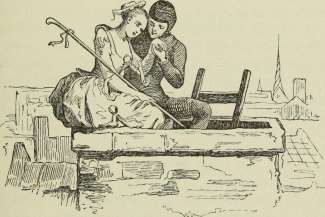
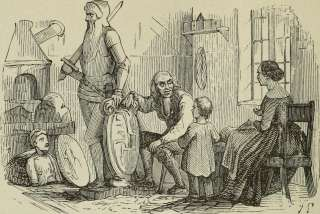
Holger Danske.
Der er i Danmark et gammelt Slot, som hedder Kronborg, det ligger lige ud i Øresund, hvor de store Skibe hver Dag sejle forbi i Hundredvis, baade engelske, russiske og preussiske; og de hilse med Kanoner for det gamle Slot: »Bum!« og Slottet svarer igen med Kanoner: »Bum!« for saaledes sige Kanonerne »God Dag!« »Mange Tak!« — Om Vinteren sejler der ingen Skibe, saa ligger alt med Is lige over til det svenske Land, men det er ordentlig ligesom en hel Landevej, der vajer det danske Flag og det svenske Flag, og danske og svenske Folk sige hverandre: »God Dag,« »Mange Tak!« men ikke med Kanoner, nej, med venligt Haandtag, og den ene henter Hvedebrød og Kringler hos den anden, for fremmed Mad smager bedst. Men Pragten i det hele er dog det gamle Kronborg, og under det er det, at Holger Danske sidder i den dybe, mørke Kælder, hvor ingen kommer; han er klædt i Jern og Staal og støtter sit Hoved paa de stærke Arme; hans lange Skæg hænger ud over Marmorbordet, hvor det er vokset fast; han sover og drømmer, men i Drømme ser han alt, hvad der sker her-
oppe i Danmark. Hver Juleaften kommer en Guds Engel og siger ham, at det er rigtigt, som han har drømt, og at han godt kan sove igen, for Danmark er endnu ikke i nogen ordentlig Fare; men kommer det i en, ja, saa vil den gamle Holger Danske rejse sig, saa Bordet revner, naar han trækker Skægget til sig; saa kommer han frem og slaar, saa det høres i alle Verdens Lande.
Alt dette om Holger Danske sad en gammel Bedstefader og fortalte sin lille Sønnesøn, og den lille Dreng vidste, at hvad Bedstefader sagde, det var sandt. Og medens den gamle sad og fortalte, saa snittede han paa et stort Træbillede; det skulde forestille Holger Danske og stilles forud paa et Skib; for den gamle Bedstefader var Billedsnitter, og det er saadan en Mand, som skærer ud til Skibenes Gal-lioner, eftersom hvert Skib skal kaldes; og her havde han udskaaret Holger Danske, der stod saa rank og stolt med sit lange Skæg og holdt i den ene Haand det brede Slagsværd, men støttede den anden Haand paa det danske Vaaben.
Og den gamle Bedstefader fortalte saa meget om mærkelige danske Mænd og Kvinder, at den lille Sønnesøn til sidst syntes, at nu vidste han lige saa meget, som Holger Danske kunde vide, der jo dog kun drømte derom; og da den lille kom i sin Seng, tænkte han saa meget derpaa, at han ordentlig knugede sin Hage til Sengedynen og syntes, at han havde et langt Skæg, der var groet fast i den.
Men den gamle Bedstefader blev siddende ved sit Arbejde og snittede paa den sidste Del deri, det var det danske Vaaben; og nu var han færdig, og han saa paa det hele, og han tænkte paa alt, hvad han havde læst og hørt, og hvad han i Aften havde fortalt den lille Dreng; og han nikkede og tørrede sine Briller, satte dem paa igen og sagde: »Ja, i min Tid kommer nok ikke Holger Danske; men Drengen der i Sengen kan maaske faa ham at se og være med, naar det rigtigt gælder,« og den gamle Bedstefader nikkede, og jo mere han saa paa sin Holger Danske, des tydeligere blev det ham, at det var et godt Billede, han der havde gjort; han syntes ordentlig, at det fik Kulør, og at Harnisket skin-
nede som Jern og Staal; Hjerterne i del danske Vaaben bleve mere og mere røde, og Løverne sprang med Guldkroner paa.
»Det er dog det dejligste Vaaben, nogen i Verden har!« sagde den gamle. »Løverne ere Styrke, og Hjerterne ere Mildhed og Kærlighed!« og han saa paa den øverste Løve og tænkte paa Kong Knud, der bandt det store England til Danmarks Kongestol, og han saa paa den anden Løve og tænkte paa Valdemar, som samlede Danmark og betvang de vendiske Lande; han saa paa den tredie Løve og tænkte paa Margrethe, som forenede Danmark, Sverrig og Norge; men idet han saa paa de røde Hjerter, saa skinnede de endnu stærkere end før, de bleve til Flammer, som bevægede sig, og hans Tanke fulgte hver af dem.
Den første Flamme førte ham ind i et snævert, mørkt Fængsel; der sad en Fange, en dejlig Kvinde, Christian den Fjerdes Datter: Eleonora Ulfeldt; og Flammen satte sig som en Rose paa hendes Bryst og blomstrede sammen med hendes Hjerte, hun, den ædleste og bedste af alle danske Kvinder.
»Ja, det er et Hjerte i Danmarks Vaaben!« sagde den gamle Bedstefader.
Og hans Tanker fulgte Flammen, som førte ham ud paa Havet, hvor Kanonerne buldrede, hvor Skibene laa indhyllede i Røg; og Flammen hæftede sig som et Ordensbaand paa Hvitfeldts Bryst, idet han til Flaadens Frelse sprængte sig og sit Skib i Luften.
Og den tredie Flamme førte ham til Grønlands usle Hytter, hvor Præsten Hans Egede stod med Kærlighed i Ord og Gerning; Flammen var en Stjerne paa hans Bryst, et Hjerte til det danske Vaaben.
Og den gamle Bedstefaders Tanker gik foran den svævende Flamme, thi hans Tanke vidste, hvor Flammen vilde hen. I Bondekonens fattige Stue stod Frederik den Sjette og skrev sit Navn med Kridt paa Bjælken; Flammen bævede paa hans Bryst, bævede i hans Hjerte; i Bondens Stue blev hans Hjerte et Hjerte i Danmarks Vaaben. Og den gamle Bedstefader tørrede sine Øjne, for han havde kendt og levet
for Kong Frederik med de sølvhvide Haar og de ærlige, blaa Øjne, og lian foldede sine Hænder og saa stille frem for sig. Da kom den gamle Bedstefaders Sønnekone og sagde, at det var sildigt, nu skulde han hvile, og at Aftensbordet var dækket.
»Men dejligt er det dog, hvad du der har gjort, Bedstefader!« sagde hun. »Holger Danske og hele vort gamle Vaaben! — Det er, ligesom om jeg havde set det Ansigt før!«
»Nej, det har du nok ikke!« sagde den gamle Bedstefader, »men jeg har set det, og jeg har stræbt at snitte det i Træ, saaledes som jeg husker det. Den Gang var det, da Englænderne laa paa Reden, den danske anden April, da vi viste, vi vare gamle Danske. Paa »Danmark«, hvor jeg stod i Steen Billes Eskadre, havde jeg en Mand ved min Side; det var, som Kuglerne vare bange for ham! Lystig sang han gamle Viser og skød og stred, som var han mer end et Menneske. Jeg husker hans Ansigt endnu; men hvorfra han kom, hvorhen han gik, veed jeg ikke, veed ingen. Jeg har tit tænkt, det var nok gamle Holger Danske selv, der var svømmet ned fra Kronborg og hjalp os i Farens Stund; det var nu min Tanke, og der staar hans Billede!«
Og det kastede sin store Skygge helt op ad Væggen, selv noget hen ad Loftet; det saa ud, som var det den virkelige Holger Danske selv, som stod der bag ved, for Skyggen rørte sig, men det kunde da ogsaa være, fordi Flammen i Lyset ikke brændte stadig. Og Sønnekonen kyssede den gamle Bedstefader og førte ham hen i den store Lænestol foran Bordet, og hun og hendes Mand, som jo var den gamle Bedstefaders Søn og Fader til den lille Dreng, der laa i Sengen, sad og spiste deres Aftensmad, og den gamle Bedstefader talte om de danske Løver og de danske Hjerter, om Styrken og Mildheden, og ganske tydeligt forklarede han, at der var endnu een Styrke foruden den, der laa i Sværdet, og han pegede paa Hylden, hvor der laa gamle Bøger, hvor alle Holbergs Komedier laa, de, som saa tit vare læste, for de vare saa morsomme, man syntes ordentlig at kende alle de Personer deri fra gamle Dage.
»Se, han har ogsaa vidst at hugge!« sagde den gamle Bedstefader; »han har hugget det gale og kantede af Folk, saa langt han kunde!« og gamle Bedstefader nikkede hen til Spejlet, hvor Almanakken stod med »Rundetaarn«, og saa sagde han: »Tyge Brahe, han var ogsaa en, som brugte Sværdet; ikke til at hugge i Kød og Ben, men hugge en tydeligere Vej op imellem alle Himlens Stjerner! — Og saa han, hvis Fader var af min Stand, den gamle Billedsnitters Søn, han, vi selv have set med det hvide Haar og de stærke Skuldre, han, som nævnes af alle Verdens Lande! ja, han
kunde hugge, jeg kan kun snitte! Jo, Holger Danske kan komme paa mange Maader, saa at der i alle Verdens Lande høres om Danmarks Styrke! Skal vi saa drikke Bertels Skaal!«
Men den lille Dreng i Sengen saa tydeligt det gamle Kronborg med Øresund, den virkelige Holger Danske, som sad dybt dernede med Skægget vokset fast i Marmorbordet og drømte om alt, hvad der sker heroppe; Holger Danske drømte ogsaa om den lille fattige Stue, hvor Billedsnitteren sad, han hørte alt, hvad der blev talt, og nikkede i Drømme og sagde:
»Ja, husk kun paa mig, I danske Folk! behold mig i Tanke! jeg kommer i Nødens Time.«
Og uden for Kronborg skinnede den klare Dag, og Vinden bar Jægerhornets Toner over fra Nabolandet, Skibene sejlede forbi og hilsede: »Bum! bum!« og fra Kronborg svarede det: »Bum! bum!« men Holger Danske vaagnede ikke, hvor stærkt de skød, for det var jo bare: »God Dag!« — »Mange Tak!« Der skal skydes anderledes, før han vil vaagne; men han vaagner nok, for der er Krummer i Holger Danske.
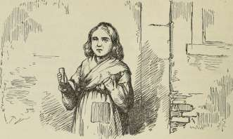
Den lille Pige med Svovlstikkerne.
Det var saa grueligt koldt; det sneede, og det begyndte at blive mørk Aften; det var ogsaa den sidste Aften i Aaret, Nytaarsaften. I denne Kulde og i dette Mørke gik paa Gaden en lille, fattig Pige med bart Hoved og nøgne Fødder; ja, hun havde jo rigtignok haft Tøfler paa, da hun kom hjemme fra, men hvad kunde det hjælpe! det var meget store Tøfler, hendes Moder havde sidst brugt dem, saa store vare de, og dem tabte den lille, da hun skyndte sig over Gaden, idet to Vogne foer saa grueligt stærkt forbi; den ene Tøffel var ikke at finde, og den anden løb en Dreng med; han sagde, at den kunde han bruge til Vugge, naar han selv fik Børn.
Der gik nu den lille Pige paa de nøgne, smaa Fødder, der vare røde og blaa af Kulde; i et gammelt Forklæde holdt hun en Mængde Svovlstikker, og eet Bundt gik hun med i Haanden; ingen havde den hele Dag købt af hende; ingen havde givet hende en lille Skilling; sulten og forfrossen gik hun og saa saa forkuet ud, den lille Stakkel! Snefnuggene faldt i hendes lange, gule Haar, der krøllede saa smukt om Nakken, men den Stads tænkte hun rigtignok ikke paa. Ud fra alle Vinduer skinnede Lysene, og saa lugtede der i Gaden
saa dejligt af Gaasesteg; det var jo Nytaarsaften, ja, det tænkte hun paa.
Henne i en Krog mellem to Huse, det ene gik lidt mere frem i Gaden end det andet, der satte hun sig og krøb sammen; de smaa Ben havde hun trukket op under sig, men hun frøs endnu mere, og hjem turde hun ikke gaa, hun havde jo ingen Svovlstikker solgt, ikke faaet en eneste Skilling, hendes Fader vilde slaa hende, og koldt var der ogsaa hjemme, de havde kun Taget lige over dem, og der peb Vinden ind, skønt der var stoppet Straa og Klude i de største Sprækker. Hendes smaa Hænder vare næsten ganske døde af Kulde. Ak! en lille Svovlstik kunde gøre godt. Turde hun bare trække een ud af Bundtet, stryge den mod Væggen og varme Fingrene. Hun trak een ud, »ritch!« hvor sprudede den, hvor brændte den! det var en varm, klar Lue, ligesom et lille Lys, da hun holdt Haanden om den; det var et underligt Lys; den lille Pige syntes, hun sad foran en stor Jernkakkelovn med blanke Messingkugler og Messingtromle; Ilden brændte saa velsignet, varmede saa godt; nej, hvad var det! — Den lille strakte allerede Fødderne ud for ogsaa at varme disse, — — da slukkedes Flammen. Kakkelovnen forsvandt, hun sad med en lille Stump af den udbrændte Svovlstik i Haanden.
En ny blev strøget, den brændte, den lyste, og hvor Skinnet faldt paa Muren, blev denne gennemsigtig som et Flor; hun saa lige ind i Stuen, hvor Bordet stod dækket med en skinnende hvid Dug, med fint Porcelæn, og dejligt dampede den stegte Gaas, fyldt med Svesker og Æbler; og hvad der endnu var prægtigere, Gaasen sprang fra Fadet, vraltede hen ad Gulvet med Gaffel og Kniv i Ryggen; lige hen til den fattige Pige kom den; da slukkedes Svovlstikken, og der var kun den tykke, kolde Mur at se.
Hun tændte en ny. Da sad hun under det dejligste Juletræ; det var endnu større og mer pyntet, end det hun gennem Glasdøren havde set hos den rige Købmand nu sidste Jul; tusinde Lys brændte paa de grønne Grene, og brogede Billeder, som de, der pyntede Butiksvinduerne, saa ned til
DEN LILLE PIGE MED SVOVLSTIKKERNE.
hende. Den lille strakte begge Hænder i Vejret — da slukkedes Svovlstikken; de mange Julelys gik højere og højere, hun saa, de vare nu de klare Stjerner, een af dem faldt og gjorde en lang Ildstribe paa Himlen.
»Nu dør der een!« sagde den lille, for gamle Mormor, som var den eneste, der havde været god mod hende, men nu var død, havde sagt: Naar en Stjerne falder, gaar der en Sjæl op til Gud.
Hun strøg igen mod Muren en Svovlstik, den lyste rundt om, og i Glansen stod den gamle Mormor, saa klar, saa skinnende, saa mild og velsignet.
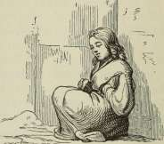
»Mormor!« raabte^den lille, »oh, tag mig med! jeg veed, du er borte, naar Svovlstikken gaar ud, borte ligesom den varme Kakkelovn, den dejlige Gaasesteg og det store, velsignede Juletræ!« — og hun strøg i Hast den hele Rest Svovlstikker, der var i Bundtet, hun vilde ret holde paa Mormor; og Svovlstikkerne lyste med saadan en Glans, at det var klarere end den lyse Dag. Mormor havde aldrig før været saa smuk, saa stor; hun løftede den lille Pige op paa sin Arm, og de fløj i Glans og Glæde saa højt, saa højt; og der var ingen Kulde, ingen Hunger, ingen Angest, — de vare hos Gud.
Men i Krogen ved Huset sad i den kolde Morgenstund den lille Pige med røde Kinder, med Smil om Munden
— død, frosset ihjel den sidste Aften i det gamle Aar. Nyt-aarsmorgen gik op over det lille Lig, der sad med Svovlstikkerne, hvoraf et Knippe var næsten brændt. Hun har villet varme sig, sagde man; ingen vidste, hvad smukt hun havde set, i hvilken Glans hun med gamle Mormor var gaaet ind til Nytaarsglæde.
'Nlt^
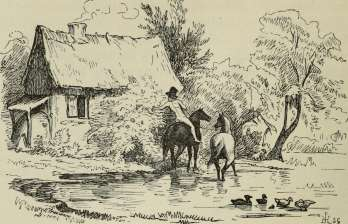
Nabofamilierne.
Man skulde rigtignok tro, at der var noget paa Færde i Gadekæret, men der var ikke noget paa Færde! Alle Ænderne, ligesom de allerbedst laa paa Vandet, nogle stod paa Hovedet, for det kunde de, satte med eet lige i Land; man kunde se i det vaade Ler Sporene af deres Fødder, og man kunde høre et langt Stykke borte, at de skreg. Vandet kom ordentlig i Bevægelse, og nylig var det blankt som et Spejlglas, man saa deri hvert Træ, hver Busk tæt ved, og det gamle Bondehus med Hullerne i Gavlen og Svalereden, men især det store Rosentræ, fuldt af Blomster, der hang fra Muren næsten lige ud over Vandet, og deri stod det hele ligesom et Skilderi, men alt sammen paa Hovedet; og da Vandet kom i Uro, saa løb det ene i det andet, hele Billedet var borte. To Andefjer, der faldt af Ænderne, som fløj, vippede ordentlig op og ned, med- eet tog de Fart, ligesom om der var Vind, men der var ingen Vind, og saa laa de stille, og Vandet blev spejlglat igen, man saa tydeligt Gavlen med Svalereden, og Rosentræet saa man; hver Rose spejlede sig, de vare saa dejlige, men de vidste det ikke selv, for
ingen havde sagt dem det. Solen skinnede ind imellem de fine Blade, der vare saa fyldte med Duft; og det var for hver Rose ligesom for os, riaar vi ere ret lyksalige henne i Tanker.
»Hvor det er dejligt at være til!« sagde hver Rose, »det eneste, jeg veed at ønske, er, at jeg kunde kysse Solen, fordi den er saa varm og klar. — Ja, Roserne dernede i Vandet vilde jeg ogsaa kysse; de ligne os ganske akkurat; jeg vilde kysse de søde Fugleunger dernede i Reden; ja, der er ogsaa nogle oven over os! de stikke Hovederne ud og pippe saa smaat! de have slet ingen Fjer som deres Fader og Moder. Det er gode Naboer, vi have, baade dem ovenover og nedenunder. Oh, hvor det er dejligt at være til!«
De smaa Unger oppe og nede, — ja, de nede vare kun Skin i Vandet, — vare Spurve, Fader og Moder vare Spurve; de havde taget den tomme Svalerede fra i Fjor, i den laa de og vare hjemme.
»Er det Ællingebørn, som svømme der?« spurgte Spurveungerne, da de saa Andefjerene drive paa Vandet.
»Gør fornuftige Spørgsmaal, naar I spørge!« sagde Moderen; »ser I ikke, at det er Fjer, levende Kjoletøj, som jeg har det, og I faa det, men vort er finere! Gid vi ellers havde dem heroppe i Reden, for de varme. Jeg gad vide, hvad det var, som forskrækkede Ænderne; det maa have været noget i Vandet, for mig var det vist ikke, skønt jeg sagde rigtignok noget stærkt »Pip« til jer. De tykhovede Roser burde vide det, men de veed ingenting, de se kun paa sig selv og lugte. Jeg er inderlig ked af de Naboer!«
»Hør de søde, smaa Fugle deroppe!« sagde Roserne, »de begynde nu ogsaa paa at ville synge! — De kunne ikke, men det kommer nok! — Hvor det maa være en stor Fornøjelse! Det er ganske morsomt at have saadanne lystige Naboer!« —
I Galop kom i det samme to Heste, de skulde vandes; en Bondedreng sad paa den ene, og han havde taget alle sine Klæder af undtagen sin sorte Hat; den var saa stor og bred. Drengen fløjtede, ligesom om han var en lille Fugl, og red saa ud i det dybeste af Gadekæret; og da han kom
H. C. Andersen: Eventyr og Historier. 23
over mod Rosentræet, rev han en af Roserne af og stak den op i Hatten; saa troede han at være rigtig pyntet, og red saa bort med den. De andre Roser saa efter deres Søster og spurgte hverandre: »Hvor rejste hun hen?« men det vidste ingen.
»Jeg gad nok komme ud i Verden!« sagde den ene til den anden, »men her hjemme i vort eget grønne er ogsaa dejligt! om Dagen er Solen saa varm, og om Natten skinner Himlen endnu smukkere! det kan vi se gennem de mange smaa Huller, der er paa den!«
Det var Stjernerne, som de troede vare Huller, for Roserne vidste det ikke bedre.
»Vi live op om Huset!« sagde Spurvemoderen, »og Svalereder bringe Lykke, siger Folk; derfor ere de glade ved at have os! men de Naboer der, saadan en hel Rosenbusk op ad Muren, sætter Fugtighed; jeg tænker, den kommer nok bort, saa kan der dog gro et Korn. Roser ere kun at se paa og at lugte til, eller i det højeste at stikke i Hatten. Hvert Aar, det veed jeg fra min Moder, saa falde de af, Bondekonen sylter dem med Salt, de faa et fransk Navn, som jeg ikke kan sige og heller ikke bryder mig om; og saa lægges de paa Ilden, naar der skal lugte godt. Se, det er deres Levnedsløb, de ere bare for Øjne og Næse. Nu veed I det!«
Da det blev Aften, og Myggene dansede i den varme Luft, hvor Skyerne vare saa røde, kom Nattergalen og sang for Roserne, at det skønne var som Solskinnet i denne Verden, og at det skønne levede altid. Men Roserne troede, at Nattergalen sang om sig selv, og det kunde man jo ogsaa tænke. Det faldt dem slet ikke ind, at det var dem, der skulde have Sangen, men glade vare de ved den og tænkte paa, om ikke alle de smaa Spurveunger ogsaa kunde blive til Nattergale.
»Jeg forstod meget godt hvad den Fugl sang!« sagde Spurveungerne, »der var bare et Ord, jeg ikke forstod: Hvad er det skønne?«
»Det er ingenting!« sagde Spurvemoderen, »det er bare saadanne et Udseende. Oppe paa Herregaarden, hvor Duerne
har deres eget Hus og hver Dag faa Ærter og Korn strøet i Gaarden, — jeg har spist med dem, og det skal I ogsaa komme til! sig mig hvem du omgaas, saa skal jeg sige dig, hvem du er! — deroppe paa Herregaarden har de to Fugle med grønne Halse og en Top paa Hovedet; Halen kan brede sig ud, som var den et stort Hjul, og den har alle Kulører, saa at det gør ondt i Øjnene; Paafugle kaldes de, og de er det skønne; de skulde pilles lidt, da saa de ikke anderledes ud end vi andre. Jeg havde hugget dem, dersom de ikke havde været saa store!«
»Jeg vil hugge dem!« sagde den mindste Spurveunge, og han havde endnu ikke Fjer.
Inde i Bondehuset boede to unge Folk; de holdt saa meget af hinanden, de vare saa flittige og raske, der var saa nydeligt hos dem. Søndag Morgen gik den unge Kone ud, tog en hel Haandfuld af de smukkeste Roser, satte dem i Vandglasset og stillede det midt paa Dragkisten.
»Nu kan jeg se, det er Søndag!« sagde Manden, kyssede sin søde, lille Kone, og de satte sig ned, læste en Psalme, holdt hinanden i Hænderne, og Solen skinnede ind ad Vinduerne paa de friske Roser og paa de unge Folk.
»Det er jeg ked af at se paa!« sagde Graaspurvemoderen, som fra Reden kiggede lige ind i Stuen; og saa fløj hun.
Det samme gjorde hun næste Søndag, thi hver Søndag kom der friske Roser i Glasset, og altid blomstrede Rosenhækken lige smukt; Spurveungerne, der nu havde faaet Fjer, vilde gerne flyve med, men Moderen sagde: »I blive!« og saa bleve de. — Hun fløj, men hvordan hun nu fløj eller ikke, med eet hang hun fast i en Fuglesnare af Hestehaar, som nogle Drenge havde bundet paa en Gren. Hestehaarene trak sig fast om Benet, oh, saa fast, som om det skulde skæres over; det var en Pine, det var en Skræk; Drengene sprang lige til og greb Fuglen, og de greb saa grueligt haardt. »Det er ikke andet end en Spurv!« sagde de, men de lod den dog ikke flyve igen, de gik hjem med den, og hver Gang den skreg, slog de den paa Næbbet.
Inde i Bondegaarden stod der en gammel Karl, der for-
23*
stod at lave Sæbe til Skægget og til Hænderne, Sæbe i Kugler og Sæbe i Stykker. Det var saadan en omvandrende, lystig gammel en, og da han saa Graaspurven, som Drengene kom med, og som de sagde, at de slet ikke brød sig om, sagde han: »Skal vi gøre den skøn?« og det gøs i Spurvemoderen, da han sagde det. Og op af sin Kasse, hvori der laa de dejligste Farver, tog han en hel Mængde skinnende Bogguld, og Drengene maatte løbe ind og skaffe et Æg, og af det tog han Hviden, og den smurte han hele Fuglen over med og klinede saa Bogguldet paa, saa var Spurvemoderen forgyldt; men hun tænkte ikke paa den Stads, hun rystede over alle Lemmer. Og Sæbemanden tog en rød Lap, han rev den af Foret i sin gamle Trøje, klippede Lappen til en takket Hanekam og klistrede den paa Hovedet af Fuglen.
»Nu skal I se Guldfuglen flyve!« sagde han og slap Graaspurven, der i den grueligste Forfærdelse fløj af Sted i det klare Solskin. Nej, hvor den skinnede! alle Graaspurve, selv en stor Krage, og det ingen Aars Unge, bleve ganske forskrækkede for det Syn, men de fløj dog bag efter, for de vilde vide, hvad det var for en fornem Fugl.
»Hvorfra! hvorfra!« skreg Kragen.
»Tøv lidt! tøv lidt!« sagde Spurvene. Men den vilde ikke tøve lidt; i Angest og Forfærdelse fløj hun hjemad; hun var nær ved at synke til Jorden, og altid kom der flere Fugle til, smaa og store; nogle fløj lige tæt ind paa den for at hugge løs. »Se'ken en! se'ken en!« skreg de alle sammen!